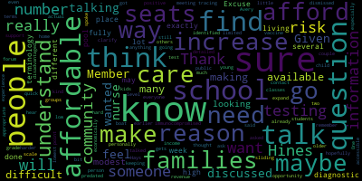
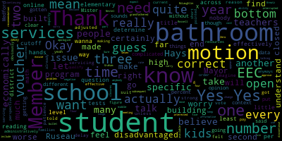

[Edouard-Vincent]: Ms. Normandin and Ms. Small from the Mustang Guidance Department brought a group of our students to the University of Massachusetts at Dartmouth for a tour and to learn more about the College Now program. Students were provided with lunch in the dining hall. Nine of our students attended as they have expressed interest in engineering, math, computer science, and physics. and all were accepted to the university during on-the-spot admissions interviews. College Now is an alternative admissions program that helps to make college a reality for all students. We are very appreciative of our guidance department providing this amazing opportunity for our students. As we are slowly getting back to in-person events, Our Mustang Italian language students were able to meet with the famous Italian chef, Lydia Bastianich at a book signing event at Italy in Boston. The students were able to speak with the chef and discuss some of her recipes in our new cookbook, all in Italian, of course. Chef Lydia told the students how much she loved Boston and that they were truly lucky to live in an area that was so diverse. The students found this to be an incredible experience. Special thanks to teachers, Ms. Canetta and Ms. Odugadi, who accompanied the students on this great field trip opportunity. I am also pleased to announce that the trustees of the James and Thelma Connors Foundation have decided to award 50 scholarships in the amount of $5,000 each to Medford students who plan to further their education in the fall. In the past, the amount of the scholarship was 3,000 per student. We are so grateful for the foundation's support of all students in Medford. We are grateful for the Foundation's support of all students in Medford since its inception three years ago. The Connors Scholarship has been able to provide 150 Medford residents with scholarships that have totaled $450,000. Applications are online only and close on March 30th. So please take advantage of this great opportunity. The application is available at www.jtconnorsfoundation.org. Again, that's www.jtconnorsfoundation.org. I do have a little bit of exciting athletic news to share that starting on March 8th, Medford Athletics, in partnership with the Special Olympics of Massachusetts, will be offering a unified middle school basketball clinic for the very first time. Our high school unified basketball program was a wonderful success, and we are looking forward to teaching basketball skills and drills for our middle schoolers as well. Last weekend, Mustang Junior Anna Casey of the indoor track team participated in the state's 600 meter race, racing against 350 girls. Anna placed eighth in the division two with a time of one minute and 41 seconds. Congratulations, Anna. Also last weekend, the Mustang basketball cheerleaders placed first in the co-ed division in the GBL competition held at Malden High School. Additionally, senior Andrea Saraburi was named a GBL All-Star. Congratulations, Andrea. Earlier today, we had at the high school, a Black History Month celebration, where we got to see dance performance today by some of our students. I wanna thank Mayor Lungo-Koehn, Member Paul Rousseau, and Member Sharon Hayes, who were able to make it on campus to participate in that celebration in the gymnasium. Students Isaiah and Rena danced, and there were many volunteers. We got on the floor and tried to do some dance routines with Mr. Gene Apollon. It was a really enjoyable event. And I wanna just thank you for joining us and participating in that event today. Also this Friday, additional information to follow, but our CCSR students will be hosting a gathering in honor of what is happening right now in the Ukraine. So at each of your tables, you can see that there is a sunflower. The national flower of the Ukraine is the sunflower. As this quote states, sunflowers, even on the darkest days, stand tall and find the sunlight. It is my hope that Ukrainians can find the light to help them get through these difficult and horrific days. Thank you and have a good evening.
[McLaughlin]: Mayor, thank you. Member McLaughlin. Thank you, Dr. Edwards. What time is the CCSR event?
[Edouard-Vincent]: The event will be at 7 p.m. We are planning to host it at the high school. More information to follow most likely tomorrow, 7 p.m. It will be a gathering. Students are working on some written pieces that they would like to share and they would like it to be a fundraiser and all funds will go to support UNICEF. So more information to come tomorrow, but we will get that out officially to you. But I just wanted to make that announcement that if anyone is going to be available Friday night at 7 p.m. at the high school, more information to come. Thank you.
[Lungo-Koehn]: Thank you again. Next up, we have COVID update Assistant Superintendent of Finance and Operations, Mr. David Murphy and Ms. Avery Hines, Director of Health Services, who both will report on operational updates and pending COVID shifts in the Medford Public Schools. We also have Director of the Medford Board of Health, Ms. Mary Ann O'Connor, who will report on the latest COVID data in Medford. Mr. Murphy.
[David Murphy]: Thank you, Mayor. Good evening, members of the school committee. I did want to start tonight's public health update with a quick apology. I've learned in the last few minutes that there was an inadvertent date stamp on some of the memos that you received, including tonight's public health memo. So this is, as you know, not agenda item five eight on January 24th, 2022, nor any of the other memos from agenda item five eight on January 22nd or January 24th. That's a typographical error, and I just want to make sure that that was noted in the minutes in case there's some questions in the future about this particular event. At least it's dated January 24th on my memo, maybe not on yours. So with respect to tonight's public health update, as the superintendent referenced, the district has extended the superintendent's mask mandate for students and staff until March 14th. As the committee is well aware, the commissioner has lifted the mask mandate statewide as of today. And you have some diversity across the Commonwealth as to how different districts are either transitioning or not. We've made the decision to transition on March 14th, two weeks after the school vacation. in part, first in consultation with public health officials, but also in part due to the historical trends of upticks following other school vacations. We know that there's a lot of travel that takes place during those weeks. And I think the point, I'm happy to answer whatever questions, and I know Ms. O'Connor and Ms. Hines will as well. But I think the sort of very short point that we wanted to make tonight is that we understand for people in the community and people in the Medford Public Schools community that there are strong feelings about if and or when to lift the mask mandate. And I think The point that we wanted to convey is that there's an understanding within the school department that masking and perpetuity is not good for students. We know that students from a social and emotional development perspective, wearing a mask for the remainder of their academic careers is not something that I think any public health officials are endorsing or that we think is a particularly good idea. At the same time, there is a responsibility on all of our part to be reasonable and to understand that after two years of living with some of the challenges and obstacles that this public health crisis has imposed, an additional two weeks of wearing a mask to ensure that some of our most vulnerable students and other members of our community have that added layer of safety and insulation is something that we think is both reasonable and appropriate. And so we feel very comfortable about the timeline that we've established, And we know that the various representatives of our school community will be able to handle this additional two weeks of the imposition of wearing a mask as part of a requirement with the same grace and aplomb that they've handled all the challenges that we as a society have experienced over the course of the last two years. And we want to extend our gratitude for to the members of the community for their patience and cooperation during that time. Subsequent to March 14th, we know that there will be a responsibility to stay vigilant and to make sure that we're continuing to keep COVID out of our schools and keep students in school. That's something that we've taken a great deal of pride in the work that we've done over the last two years, and that work will continue. And at the same time, the way in which we meet these challenges has to evolve with the evolving pandemic. And so you've heard me say on a number of occasions that our widespread testing surveillance program is not something that was going to be sustainable in perpetuity. As it happens, we've been given a phenomenal opportunity through the free rapid COVID take-home test that DESE has made available, and we are in the midst of that transition as well. This will be the final week of our building-wide surveillance testing program, but Ms. Hines and her staff will still be in support of school communities through diagnostic testing for the foreseeable future. So I think we've provided a lot of information, and not all of it has sort of constituted major shifts from week to week as we've met here, and so I think we'd be happy to take your questions, and if there's any other points that I could more fully flesh out, I'd be happy to do that.
[Unidentified]: Thank you, Mr. Murphy. Member Hays.
[Hays]: Excuse me. Just to make sure that people understand, because there's a lot of terminology, diagnostic testing, can we go over exactly what will be in place after the pool testing is done this week so people fully understand the different
[David Murphy]: Sure, so I'll define I'll defer to miss signs for a clinical definition of diagnostic testing. But I will say that the first layer of insulation is the rapid at home test that will be available to test per kit one kit for every student and staff registers for the program distributed every other week. So that's the first line of defense from a testing perspective, is that rapid test distribution that Dessie has made available. And then, as I said, our health services department will continue to be available, offering PCR and rapid tests through diagnostic testing. And Ms. Hines, would you want to expand upon that at all?
[Avery Hines]: Sure, so diagnostic testing is something that diagnoses. So it would be one of those rapid tests we would use in the office if a student came to us with symptoms and then confirmed with us, sent out PCR to the lab, which we don't run. It takes about 24 hours on a good day. But again, a student has to have that first consent form that we sent home previously, which is the one that we do through Tufts. It wouldn't count if they have the at-home rapid test consent form. to be able to do that with them, we would have to have that initial consent form to be able to provide that service in school, but we are able to take same day consents. A lot of times we get them over the phone with parents just to make it a little bit more convenient for them because we understand that maybe you didn't need testing prior, but now you know your students having symptoms and you want them tested, we can help test and diagnose them right there.
[David Murphy]: I'll just add, as we always do, that if you are symptomatic, you should not come to school.
[Unidentified]: Yes, Member Hays.
[Hays]: Thank you. I know I've had several questions from people in the community about for families that may have someone living with them who is high risk for any number of reasons, immunocompromised or older or too young to have the vaccine. And I think I already asked this personally of Avery Hines. I just want to make sure that everyone gets to hear it. Is there a way or how can families Since we're not doing contact tracing if they need to know if they if they really have a reason to need to know if there's someone in the classes test positive because they they want to have that information in terms of the person at home that's at risk, how can they or can they is there a way for them to go about. talking. I think what nurse Hines had said was to have them talk to the school nurse. I just wanted to make sure that kind of got out in a public forum.
[David Murphy]: No, I appreciate that. I think that's important information to be shared, miss. And so I appreciate that opportunity. I'd ask miss Hines to comment on that. One point I want to add to something I said earlier, our transition on March 14th is to a mask optional period. And so if families have specific circumstances that they are more comfortable with their children continuing to wear masks, they are absolutely welcome to do so for the remainder of the school year. But Ms. Hines, do you want to comment a little on the contact tracing?
[Avery Hines]: Absolutely. So just as we've always done, contact tracing is very individualized. And if you or someone you know, or someone you have at home needs to be extra vigilant, we just ask that you let your school nurses know. We think of every student in the building every day. So if we hear of something that we feel that a family needs to know about, we will do our best, you know, while maintaining someone's confidentiality to make sure that someone that needs to know will know.
[DnBk5C8-dFs_SPEAKER_09]: Thank you.
[Unidentified]: Thank you, Mr. Murphy. Thank you, Ms. Hines.
[Graham]: We have a mayor member of Graham. I just wanted to make sure that there weren't members of the audience who wanted to speak on this topic because this would be the opportunity for them to do so. Is there anybody who was wanting to speak on this topic? I'm not, you don't have to, if you don't want to, I just wanted to make sure that everyone knew that now would be the time for that.
[Bair]: Just name and address for the record, please. I'll tell you, my name is Tiffany Bear. I live in Medford. His daughter goes to the high school. I'm just really confused as to where you get your science from. If it's just the CDC, because I've called your office before and you said, Oh, we're just following the CDC's guidance. Okay. And now we're getting, we're going to wait two weeks to unmask our kids. They've had masks on that don't stop viruses, period, for two years. Why are we extending this? You say there's gonna be an outbreak? This virus is getting weaker. Now it's just basically like a cold virus. So did you guys throw the baby out with the bathwater when the flu came through all these other times? No, you didn't. It's really, I'm just beyond frustrated. I have a book here. All right, I have this, Cruz, masks don't work. These are studies, each individual thing, studies upon studies that says masks are not valid for the purpose that you're using them for. People are, the kids are falling behind in school. Even the little, little ones, you're saying, oh, we have to wait for the vaccine, but the vaccine does not prevent transmission nor someone from getting it. So what the hell are we waiting for? It's time to strengthen their immunity with diet, exercise, good food, that kind of thing. You can prevent it. I've worked this entire pandemic frontline, no mask. Am I dead? Do you guys see me? I'm here. Okay. My 80-year-old father just got COVID. Supplements, nutrition, no vaccine. He's still here too. This is sheer insanity, what we're doing to our kids. Where's the science? What science did you use? Where? Avery too, I've spoken to her. Oh, we're just following the CDC. Well, they've changed their mind. They say, take the masks off the kids. And yet you guys want to still muscle them. I don't understand what y'all are doing. I don't.
[Edouard-Vincent]: Thank you, so our official position is that the Medford Public Schools will continue to be fully masked until March 14th.
[Bair]: I understand what your policy is, but why are you doing it?
[Edouard-Vincent]: So what prompted us to extend the masking for an additional two weeks is that our data as a district demonstrated that each time we went on an extended break, whether it was Thanksgiving break and Christmas and the New Year's break, that we saw an increase in COVID-19, yes. If you could let the superintendent finish, please. Positive test, right?
[Lungo-Koehn]: Positive test.
[Edouard-Vincent]: If you could let the superintendent finish, please. Thank you. So as a result of the data, when we made the decision to have it in collaboration with our own board of health, Our data showed that two weeks after an extended leave of time, that there was an increase and then there would be a decrease. And so based on the information that we had, that's what had us land on the date of Monday, March 14th, which is nine additional days of masking. We have all been masking for two years. And so for us to have nine additional days of masking, we can handle the nine days. Thank you for your feedback.
[Bair]: Right. And do you realize that the PCR test isn't valid? And how many, do you have the data stating how many people that tested positive had gotten ill from it?
[SPEAKER_25]: Thank you for your feedback.
[Bair]: No, did you have that?
[SPEAKER_25]: I said, thank you for your feedback.
[Bair]: I asked you a question.
[SPEAKER_25]: Can you answer the question?
[Bair]: Yes. Which data do we get that from? Who do we get that from? You just said you had a data that stated that the cases go up.
[Lungo-Koehn]: No, the superintendent gave you the reasoning for the nine additional days. And that's where she stands.
[Bair]: Right, I'm asking who do I ask to get the data that would state how many people actually got ill that tested positive? We have the data on the website. The data is on the tracker.
[Edouard-Vincent]: The tracker is it.
[Bair]: What's that? We have a COVID tracker out on the city website, as well as the school website. So people that tested positive with PCR tests, and then how many people actually got the disease from that? Have you guys tracked that? Because you can be positive PCR and not have COVID, depending on how many times they cycle the test.
[Lungo-Koehn]: Member Ruseau? Mayor, there are four other hands up on Zoom. Yeah, we're gonna, I think there's multiple people, so we'll have to limit three minutes for, okay, so you're just gonna blow me off and not let me in here to find this stuff? We don't have, I don't think that specific data, I don't know if Avery wants to comment, but that data, I don't believe we have, every data point that we have calculated is on one of the two websites. Website, all right, thank you. Thank you.
[Unidentified]: Andrea Porcaro.
[Lungo-Koehn]: Dr. Cushing, if we can unmute. Thank you.
[SPEAKER_20]: Hi, thank you so much. This is Andrea. How are you all doing?
[Lungo-Koehn]: Name and address for the record and you have three minutes.
[SPEAKER_20]: Andrea Porcaro 42 Guild Street. Thank you so much for letting me speak. I just wanted to say quickly that while I heard the reasoning why you think masks for another nine days is important and no big deal. I just wanted to point out the obvious that literally the Board of Health removed the mask mandate for everywhere indoors in Medford. So it appears as though school is the only dangerous place to be like the. I mean people again if it's mask optional after whatever date people who want to still wear them can. But everyone else that doesn't want to wear them, they're living their lives going anywhere in Medford with no mask until they have to come to school. And you say, oh, it's only nine more days like it's no big deal. For some people, it's a huge deal. My children aren't even in school anymore because they were treated so poorly last year when they had a doctor's note to not wear their mask. They had a doctor's note and they were still secluded and isolated and everything from their friends. And they didn't get the same, they didn't get to pick their seat. They were pushed off into a corner. Kindergarten and second grade, this is how my children were treated. But you're telling me that school is so dangerous that for another nine days, we need to wear masks. I just literally cannot even fathom that the I can't understand where this comes from. And I think to say it's only nine more days is really condescending because for some people that's a huge deal. And it's been two years on these little innocent children who are not getting sick and who haven't gotten sick. And I too would like to see the data that shows not the positive test, because we all know a positive case means nothing unless you get sick. That's when we really need to be concerned if you're getting sick and if you're dying. So I too would like to see the data not only on the positive cases, but who actually got sick from those positive cases. Because if every single person in the school tested positive, but nobody actually got sick, who cares? So I too would like to see that data that you guys are basing that on. Thank you.
[Lungo-Koehn]: Thank you, Andrea. We have M. Trinh.
[Unidentified]: Name and address for the record, please.
[Melanie Tringali]: Hi, this is Melanie Tringali from 116 Forest Street in Medford, Mass. And you, again, I'm going to reiterate that you have been saying that you're following the CDC guidelines all along. Until now, you're no longer following the CDC guidelines. The CDC came out with new guidelines based on when to mask indoors and when not to mask outdoors. Masking indoors is based on a number of different criteria now based on the CDC. And they're looking at hospitalization rates, the amount of beds that are being used and not being used. And Middlesex County right now is considered to be low risk. And according to the CDC guidelines, those are on low risk counties are not required to mask indoors anymore. Even those in medium risk, they don't even recommend that people mask indoors anymore. Okay, even on those counties with medium risk, their recommendation is only those that are vulnerable or who have serious complications from COVID mask, no one else. And we're in low risk. Secondly, you said the reason you're continuing your mask mandates is due to uptick after every single vacation. I like to know where that data is. I'm on the DESC website right now, and I am checking all the reported cases of positive cases after vacation. The only time there was really an uptick was during the January 2022 time when there was Omicron, when there was a high number of cases. I'm looking here right now, 12-24 to 1-6-2021, four cases reported of students, one teacher. 1-7 to 1-13, zero cases reported for students, two teacher. February 2021, five students, six teachers. So where is the data that there's an uptick? There's nowhere near going through, if I'm looking at the correct data on the DESE website, in an Excel document of all number of district students reported individual positive cases. These are the numbers. April of 2021, two students, zero teachers. All the data is right here. So I'm curious, what data are you basing this information on? Where are the upticks that you say are here? Second of all, out of all these numbers, what is your data based on students? You say you're not doing contact tracing anymore and no one else needs to mask, only the students. Well, we know the majority of students are at least risk of any serious complications and schools have never been known to be a super spreader. So again, I like to know where your documentation is and also the documentation that you've been tracking that mask has been preventing any and preventing spread within the schools. Where's your documentation on that? Thank you.
[Lungo-Koehn]: Thank you. Member McLaughlin.
[McLaughlin]: Thank you. I just wanted to note that Well, this is a difficult topic for many, and folks that are speaking now, we've gotten the same in emails from both folks who want to stay masked longer than lot 14, and folks who want to unmask, and numerous emails. And I do wanna say that we are all parents here as well. And we all care about our children and we all care about your children. And I would rather err on the side of caution for two more weeks after a vacation, when children have been finally together in public settings across the state. Additionally, you know, when people are talking about science and what science, I know that 941,044 people died in the United States of America in the past two years due to COVID-19. That's the data. Is it worth one child? Really, I don't understand. And I get that we're all heated about this and that this is a political cause, but for many, but I want to defer to the superintendent and say, I thought that this was actually a happy medium, if you will, between the two opposing sides that we are hearing so much from that will err on the side of caution after a vacation, when the children were all together publicly, finally, we were able to socialize with each other. Some without masks, some with. I definitely have a student that is high needs and vulnerable, but also all the other families that I know that have high needs and vulnerable who are very much scared, and people can say what they want about that but it's legitimate and it's real and I think that You know, the superintendent and the central administration have been working and the nursing staff and the teachers and everybody has been working so hard these past two years that when are we going to finally like join together and be like, we're almost on the way out of this. We're a community. Let's get past this. Let's start to socialize with each other and stop fighting and start focusing on what's important. And that's the children. Thank you.
[Lungo-Koehn]: Thank you, Member McLaughlin. We have three more people that would like to speak. JF, name and address for the record.
[Unidentified]: JF, name and address for the record. I believe that's unmuted.
[Lungo-Koehn]: Yeah.
[June Falco]: Hello. Can you hear me now?
[Lungo-Koehn]: We can name it. Okay.
[June Falco]: Yep. My name is June Falco Medford bass. Um, I have first a statement because of the statement that was just made briefly. And then I have a question, um, which has not yet been answered to me. So it was just stated that over 944,000 people have died in the United States of COVID-19. That is inaccurate and untrue. Even Fauci has said that people have died with COVID-19 and not from COVID-19. So hospitals are now starting to categorize that distinction, which is very, very important because the numbers we've been given all along are not accurate. Now, to my other point, I am still waiting for an answer from Marianne O'Connor, the superintendent and you, Madam Mayor. These masks are under an emergency use authorization by the CDC and FDA. Emergency use authorization devices come with the informed consent rules under federal law that they can be declined. And that has not been given to our students, to our children. We no longer have a state of emergency. DESE has dropped their mandate. The state has dropped their mandate and now even the CDC says that we should not be masking our children. So under what medical authority are we refusing our children's right to decline wearing these emergency use authorization devices? And I would like Marian O'Connor to answer me directly since she has not answered my email.
[MaryAnn O'Connor]: Hi June, I believe I answered your email more than once that I am in disagreement with your EUA statement that they are supported devices and they are not classified as medical devices.
[June Falco]: Right, you disagree that is not a medical device.
[Lungo-Koehn]: But the Board of Health Director has the floor. If we could mute. So, the Board of Health Director could.
[MaryAnn O'Connor]: And I did seek out a medical, I'm sorry, legal opinion on that. And that was the legal opinion as well. So they are not deemed medical devices. They are supportive devices. And I believe I answered you twice on that email. Thank you.
[Lungo-Koehn]: Thank you, Director O'Connor. June, you have one more minute if you'd like to finish.
[June Falco]: Thank you, I would. Yes, you did answer me and we were going back and forth about what they were categorized as and you don't wanna refer to them as a medical device. I don't really care what you call them. I gave you the direct link that states from the CDC website stating that cloth masks are under an emergency use authorization, full stop. So if it's cloth masks are under an emergency use authorization, then those are informed consent masks and the children do have the right or parents as their caregivers to decline them. So whether or not we wanna say they're a medical device, quote unquote, or not, that point is moot. They are, and I have sent you that picture and I'm happy to send it to whomever from the CDC website themselves and FDA stating that cloth masks are under an emergency use authorization. That point is not up for debate.
[MaryAnn O'Connor]: I'm sorry, June, I disagree, but we can take this offline. Because to be under emergency authorization, they would have to be deemed a medical device and they're not. But we can take this, I can follow up with you tomorrow.
[Unidentified]: Thank you. Next up we have Adam. Hello.
[Lungo-Koehn]: Yes, your name and address for the record, please.
[Jessica Healy]: Jessica Healy, Full Lock Road. I just have a few questions about the masks. Pretty much, I know you guys are saying that you're doing this after the February vacation, extending it two weeks for the uptick in cases that happen after break. I just wanna know if we take them off our kids March 14th, a month later comes April vacation. So after April vacation, do we mask our kids up for another two weeks, then take it off and go on summer break? and come back in September and mask again. And also for the buses, it's saying that the kids still had to wear a mask on the bus for the federal regulation, but the CDC actually dropped that February 25th. And you guys have not said anything regarding the CDC dropping that. So I just wanted to know about those two things. Thank you.
[Lungo-Koehn]: I don't know, Ms. Murphy, if you want to comment on the bus, but I know as far as April vacation is concerned, we're hopeful and confident that the case count will be on the decline and we will, by no means, hopefully, have to wear.
[David Murphy]: That's right.
[Edouard-Vincent]: The rapid tests as well.
[David Murphy]: Yeah, the first layer of insulation is the rapid tests. There's no plans to institute a mask mandate as of now after April vacation for the reasons that the mayor just referenced. With respect to the buses, that guidance has obviously just come out very, very recently. We have begun conversations with our bus vendor with respect to how the mask mandate may change. It's an ongoing conversation with a vendor that we have and would like to maintain a strong relationship with. I expect we'll be able to update the committee on that next week. But as of right now, that mandate, the local mandate, is extending until March 14th, and we'll report back to the committee next week as to whether or not that will change.
[Unidentified]: Thank you, Mr. Murphy. Kim D., name and address for the record, please. Kim DeGregorio, 83 West Street.
[SPEAKER_32]: I am the mother of a fourth grade child and a sixth grade child. My fourth grade child has a chronic medical illness. I wanted to thank the superintendent and the school committee for extending the masking until the 14th. And for those of you that think that your children are more important than mine that is very disheartening. I think you should really start to think about the children who If they do get COVID, there may be lifelong consequences. It's not just a cold for everybody, just because it might be a cold for you or your children or your family or your friends. There are plenty of people that have died and could still die and have lifelong consequences. Thank you.
[Lungo-Koehn]: Thank you, Kim. Allison Lied, name and address for the record, please.
[SPEAKER_28]: Hi, yes, Alison Lied, 31 Kilgore Ave, Medford. I just, like the last speaker, I just wanted to add an opposing viewpoint. I'm a medical scientist for the past 20 years, and this has been very hard meeting to listen to, as I'm sure it has been for the other scientists in the room. So I just wanted to thank the school committee, the school committee members, the school administration, and the Department of Public Health for keeping our children safe so far. The testing program for the past two years has been fantastic and the masking protocols as well. That's the reason why our children have been safe and people are only complaining about cold symptoms or none at all. I have two children, one in first grade and one who's too young to be in school and who's too young to be eligible for the vaccine. So not only are you keeping the children in school safe, you're keeping them from spreading it to our children who don't have a chance yet to be vaccinated. Thank you, I know it's hard to listen to these comments full of misinformation and scientific inaccuracy. So thank you, that's all I wanted to say.
[Lungo-Koehn]: Thank you, next up is Christina McGordy. Name and address for the record, please, Christina.
[Cristina McCorty]: Hi, my name is Christina McGordy and my address is 24 North Street. I just also wanted to speak, just after listening to the comments, I wanted to talk about the perspective that some other people have. And for me, I'm also thankful that the mask mandate didn't end today and that there's two more weeks since we're coming back from vacation. But I also wanna urge the administration to think about extending it Beyond that, because we are having lots of changes right now with our surveillance testing program ending and switching to an at-home rapid test program. with results that will not be as reliable and accurate. I don't know, and I'm hoping we'll get more info about how many, like what the percentage is of participation in that program. I know it's gonna rely more on people having to opt in and do the test weekly and report it. So I know we're keeping an eye on the cases when deciding about moving forward with ending the mask mandate. We don't have the same data, you know, it's one one variable that's changing, so it seems like too much to to take away masks. Before we have more time, and the other things were. Our vaccination rate in Medford is not that high with the five to 18 year olds. And so when some other places are considering lifting their mandates, And their numbers are higher. I think it's different than ending it here before we can get closer to that 80%. So I just feel strongly we should continue offering the clinics and monitoring the vaccination rates before we consider lifting the mandate. And also waiting for the under fives to get vaccinated. People are talking about vulnerable children at school and at home. anyone who has younger siblings at home that haven't been able to be vaccinated yet. Hopefully that will happen soon, but it feels like we should wait for them to have that chance. And like others just said, like people keep saying, like Baker said, our schools are safe. We see that they're safe and people are talking about how safe our schools have been, but that's because the kids have been masked. So, you know, we don't know what's going to happen when they're unmasked so it's it seems like premature to move forward with that. Like so quickly. And the other thing is, I don't know, talking to someone today in another district, they talked about that they may be unmasking in the high school first. And one of the things is, because I am the mother of elementary school children and a former elementary school teacher and I spend a lot of time in my kids elementary school. I'm thinking of everything from that perspective. And so perhaps, you know, it's wiser to start with letting them go first since they understand personal space and they don't pick their nose and you know, all the things that little kids do. So sorry, that's all I wanted to say. Thank you so much.
[Lungo-Koehn]: Thank you, Christina. Kerry Laidlaw.
[Unidentified]: Name and address for the record, please.
[Kerry Laidlaw]: I just have a basic yes or no question for you guys right now. Because we can go back and forth all night with this whole thing with the debate everyone has their opinions and I know everyone's been working their hardest to keep everybody safe and I appreciate that. So having I, as a woman who could not wear a mask for two years and who has remained COVID unvaccinated. Okay, so no, I'm not here to kill the world. I'm not here to hurt children or hurt anybody like the things that have been said about me. But I just have, like I said, a yes or no question. Will the children be discriminated against if they turn up to school without a mask before the 14th? I was told no, and I just wanna confirm that with you all. My children did go to school today, mask free, as there is no longer a mandate in place in the state of Massachusetts. And I appreciate that, and I thank the Roberts, and I thank everybody for being respectful about that, and I just wanna make sure that that's being clarified.
[Lungo-Koehn]: That's correct, Ms. Laidlaw. I know the superintendent did reply to you in email format saying the children will not be discriminated against.
[Kerry Laidlaw]: Correct. I just wanted to make sure that that was correct and that if the children chose to go to school without a mask before March 14th, that they would be allowed their education, not bullied, harassed, ridiculed, and made fun of by their peers, like some children who have had medical exemptions were. I just need to make this very clear. Yes or no.
[Lungo-Koehn]: It will not be discriminated against and discrimination and bullying is not tolerated. So I'm sure the administration will act accordingly.
[Kerry Laidlaw]: Thank you very much. Great evening.
[Lungo-Koehn]: Thank you. Next up we have Melanie Raylan.
[Melanie Raelin]: Hi, yeah, I'm on the record and you have three minutes. Sure. 61 Brewster Road. Um, I just want to thank everybody for and particularly our school administration, the superintendent, our school committee, everybody for, you know, just everything you've been doing. I just do want to actually say a lot of people were saying they don't see any data and there is a COVID tracker that honestly has been a great gauge of just how we're doing in Medford. And Medford's been doing better than a lot of other districts and communicating with parents of how many people had gotten coded. I do wish that we everybody who was enrolled in the vaccination program in school was just automatically opted into the at home test program. because the numbers, it took so long to get the number of participation up there. And now with the opt-in, I think a lot of parents don't realize it. Honestly, I almost forgot to test my kid before sending them in this week, because there wasn't a reminder from the school administration, but luckily it was on our Facebook page. That aside, there was a study that came out today. It didn't come out today, sorry. It came out on Monday, done by the New York Board of Health and the Albany Board of Health. They looked at over 1 million children between the ages of 5 to 17, so that's 852,384 12 to 17-year-olds who are fully vaccinated and 365,502 5 to 11-year-olds who are fully vaccinated. What they found was that the effectiveness of the vaccine went from 68 percent to 12 percent from the period of December 13, 2021 to January 30, 2022. While in the same the same exact window it went from 66 to 51% in the 12 to 17 year olds. So I just want to read to you what the end of the study says was these results highlight the potential need to study alternative vaccinated dose of vaccination dosing for children and continued importance of layered protections including mask wearing to prevent infection and transmission. Also in that 5 to 11 range, the effectiveness so that this is against getting COVID and then there's the effectiveness of severe disease and that went from 100% to 48% in that six week period. So the vaccines we've given our kids are helping them, but again, it's it does show that continuing mask wearing as it has kept our kids safe to this point and that is that is the frustration with what's happening is that the reason our kids have been so safe and transmission has been fairly low outside of the week of. The first couple weeks of January when they came back from vacation and numbers went all the way up to 150 at the high school and 50 at our kids school at the Mississippi as well as the Roberts and other areas schools. The the mask wearing was really a key part of that, and we also should all remember that mask wearing isn't about you wearing the mask protect yourself, but other people protecting you by wearing a mask. and you protecting them by wearing a mask. So it's about helping each other, which I know we all know, but it's really key. As a retail worker, even the lifting the mask mandate has been tough, but people have been very respectful and continue to wear masks. And I've noticed that in many establishments, people continue to wear masks who work in the stores and who attend those stores. because we are watching out for each other and we're a community that really cares. Lastly, I know I'm almost running out of time. In Worcester, they released the mask mandate, I believe last week right before vacation. And one of the parents wrote an update that they had to merge classrooms together because teachers were getting sick as well as students. So many that they had to, they had low staffing to the point where they had to put these large classes together. and show them movies and come up with other ways to entertain them as opposed to teaching them because so many people had to go home from COVID infection. And that's something we should be looking at. I'm sure you all are, but, you know, Worcester having already done this, we should look at that data and see what's going on. And obviously you're gonna look at the data from the people who lifted the mask mandate this week. Thank you. So, yeah. Thanks so much. Thank you, Melanie.
[Lungo-Koehn]: Thank you. Thank you for all who spoke out one way or another. for the administration. And thank you, Director O'Connor and Ms. Hines for being on Zoom to answer questions. We are on to number three, which is a request for approval of District Mural Principal DeLeva and Medford Family Network Director Marie Cassidy. report on a community based mural project outside the West quarter of the Medford High School.
[SPEAKER_02]: Good evening everyone evening Mayor current superintendent with Vincent and members of the school committee. It's wonderful to be here tonight. Wonderful. I think you all have in your, in your packets. Information about a new installation at the high school we propose it's a grant that was written by the arts Medford and supported by the metric family network through our five one c three process to support the funding for this project and I think it's going to offer some very special opportunities for families. and our community to come together in ways that they haven't been able to in the past two years. It's a series of kits that will be brought together using the mosaic media and have a beautiful installation that's created by those families or groups of friends or adults who want to bring together their creative expression and bring it all together under the auspice of the Arts Medford program. So we're hoping that this can be a beautiful way to adorn our high school.
[D'Alleva]: And there was a concern, Paul, about the... Yeah, so the reason why I'm also here to support Marie is going back to putting the mural at the Andrews. There was a lot of discussion of making sure that we were able to not paint on the On the rocks, but make sure we could screw it in and we could take it down if we needed to just you know you never know what happens to a building and therefore we do it in the same. reason why we're here is asking is we're planning to do the same thing with the mosaic of putting it on panels and screwing it into the building and then, if we need to take it off. For whatever plans for the high school I don't want to get ahead of myself, but for whatever. plans are going through the high school that we have the ability to keep the mosaic and utilize it, whatever new structures there. And even if we have to move it to a different area of the building, we can do that as well. But you know, in following the steps and the protocol of putting something on the building, we're here to ask the committee for approval to move forward. Maria has done a great job securing grants. And I think going back to the days of when we did the mural outside of the Andrews and we had paint days, things of that nature was great for the community to come together. And everybody, you know, myself included, we all found a piece and we all kind of put our heart and soul into it. So, um, I think we're looking to do the same thing for this, uh, mosaic as well.
[Lungo-Koehn]: Thank you. Principal Delaver and Ms. Marie Cassidy. Is there a motion on the floor for approval? Seven in the affirmative, zero in the negative, the paper passes. We can't wait to see it. Thank you very much.
[Unidentified]: Thank you.
[Lungo-Koehn]: Number four, we have math after school tutoring enrichment program, assistant superintendent of elementary education, Ms. Suzanne Galussi, will report on an upcoming skill building math intervention program. Ms. Galussi. Did the little person with the amplified voice or Mr. McLaughlin can turn you on? Thank you. Okay, there we go.
[Galusi]: Good evening, Madam Mayor, members of the school committee. In a minute, Dr. Cushing will display the brief slide deck I have just to explain the extended day math opportunity that we have for students at the elementary level. Um, I'm, I know this goes without saying, but as a result of the coronavirus pandemic math instruction has taken a pretty big hit. In a recent study from the NWEA, student performance in math when compared to any other content area has seen the largest deficit throughout these three years of the pandemic. There's several reasons for that in relation to the other content areas, but some of them are highlighted here. So lost math instruction really cannot be duplicated. So when students are absent for various reasons throughout this pandemic, mostly quarantining, the direct instruction that they received from the teacher cannot be replicated. So students really, many students struggle. And when they are not there for the direct lesson, and all of the learning that comes through during that lesson, it's not so easy as having parents work with them at home, or send a remediation pack at home. that that instruction is key. Unlike title one and remedial reading services in Medford, any tier two math supports are provided by the classroom teacher in in the elementary schools. And I think oftentimes parents Not all, but I think some feel more comfortable maybe working with their students on reading and at home. And so I think sometimes the math piece can be a little difficult for families to help their students while they're at home. So therefore, we would like to offer an extended day opportunity for math for targeted students that have lost instruction due to various reasons, mostly quarantining, throughout these three years. So we are going to, we're in the process right now, I'm in the process right now of working with educators to look at various data forms in order to target students that would benefit from this opportunity. So that includes our math data. So for this year, we've had two rounds now of data that teachers have to be able to work with. We do have MCAS data for students that are currently in grades four and five. We can't include grade three yet because they didn't take it last year. I will say though a little like asterisk to that data point is that last year not every student took the MCAS and then some students were home. So in terms of like the validity of data we're really looking at like the math map data, as well as corresponding math data that teachers are using in terms of their curriculum assessments and associated work, along with attendance reports and quarantining reports. All of that data, teachers are working through, they are providing student names for eligibility, and we're having a panel review to go over that data for eligibility. Then letters and emails will be sent to families telling them that their child would probably benefit and inviting them to this opportunity. The format for this, we would like to start the week of March 14th and have it be twice a week after school until 4 p.m. Knowing that dismissal is at about 2.35, we would have a brief little transitional period with a snack and have a solid 60 to 70 minutes of math instruction. It would, and then the 4pm dismissal time families can come and pick their children up from school, and we are also going to provide a late bus for some families if they need that. And or if some families attend if the students also attend other after school programming in Medford the late bus could bring them to you know the YMCA. or some of the other locations. So I'm working with Megan Fidlecari and David Murphy on the late bus transportation piece. This is an opportunity. What's different from this than some of the other opportunities we've had that were like strictly focused a little bit on the MCAS, which was really just for grades two through five, this will be for grades K through five. And we would like to keep the groupings somewhere between 12 to 16 students. we are going to be using ESSER funds to pay for the stipends and the late busing and any associated materials. So I've spoken a little bit about some of the data sets, but just so that you are aware in terms of like the content that we're going to be providing students, because this is also an interesting year in the fact that we're doing three math pilots. And three math pilots that have three separate scope and sequences. And so we have to look at at materials that are going to kind of align all three of those and really target where the students are, which is why that the map math data is so crucial because it gives us not only standard trends. at each grade level for each school, which is what Carmen Williams and I have been working on, which I greatly appreciate her help. That way we'll be able to provide teachers with the data trends at their school for their grade level, as well as the individual student needs that are gonna be in that group. And that is gonna help us develop the lessons. And we will be using the current programs as well as pulling from illustrative math tasks, which really has students working on their problem solving and application skills and some Eureka math. So if you have any questions about this opportunity, please let me know.
[Lungo-Koehn]: If we could just move to the last slide and keep that one up while we ask questions, if we have any. Right. That'd be great. Member McLaughlin.
[McLaughlin]: Thank you. Thank you, this is a great opportunity, Ms. Glucy. Excited about this. And when you said 12 to 15 students, I'm assuming you mean by school for the group size, or what did you mean by that?
[Galusi]: Per grouping, so let's say at one of the schools for the fifth grade. Right. We're looking for the fifth grade class.
[McLaughlin]: Okay.
[Galusi]: It would be about somewhere from 12 to 16 students.
[McLaughlin]: Great, so like a small group instruction. Yes. Yes, thank you. And I am assuming that obviously this is available to children with IEPs and English learners.
[Lungo-Koehn]: Absolutely.
[McLaughlin]: Yeah. Great. Thank you. This is really exciting.
[Lungo-Koehn]: And will it be, but we're going to try to like limit it to the, the 12 to 16 children per grade level that need it. Or if there's 30, you'll have two teachers, two groupings.
[Galusi]: Right now it we're using the data to inform our, our groupings, because we really want to target those students that had that lost instructional piece because, you know, math builds on one another and so if students are missing the foundational skills they're going to have a tremendous time. then moving to fractions, let's say, like fourth grade's very heavy. They're supposed to come to fourth grade with that solid number sense of addition, subtraction, multiplication, and division. But for some of those students, they lost that in third grade. And so now when they're in fourth grade and they have to use that applied knowledge to do fractions, some students didn't feel that impact from the pandemic, some did. And so we're trying to create a space for them to catch up. Thank you.
[Lungo-Koehn]: Member Ruseau and then member Graham.
[Ruseau]: I just want to let you know there are two people with their hands up online.
[Lungo-Koehn]: I was going to let the committee ask questions and then we'll go right to.
[Graham]: So my only question was whether you need a vote of approval from us to expend the ESSER funds.
[Lungo-Koehn]: I think it was in the budget last year so we've already proved it is the answer to that. Thank you for the grant. Oh met member haze.
[Mustone]: Member of the stone and it's your just a quick question I don't in past years with after-school programs like the handshines that kids who did the YMCA afterschool program weren't available to, didn't have the transportation. Can kids who go to the YMCA at Chevalier be able to take a late bus there? Just to make that clear to families.
[Galusi]: Yes, that's right.
[Mustone]: Each school will have one late bus. And their own late bus to whatever stop they need. Yes. Okay, thank you.
[Hays]: Member Hays. I just wanted to clarify, because I thought your question had more to do with, if there's more than 16 kids identified that need the support, will you only go with the lowest, you know, 16, or is there an opportunity to expand to two groups at a grade level?
[Galusi]: I think that's going to be the piece of the panel review. So we're going to wait and see where the data leads us. And if I'm able to staff it, then absolutely we can increase it. But I have to wait for the review piece of that.
[Lungo-Koehn]: Yeah. So on that, can we get an update when you review the data? Cause it's two weeks away. So I mean, yeah. I'd love to know how many groupings in each school we have, so we can make sure everybody's getting serviced if they need it. We have two people, three people, okay. Oh yes, Member Ruseau.
[Ruseau]: Thank you, I actually had a question too. Thanks to Member Hays, I do at least. So I guess, To get a little more specific, I just want to know that, you know, we've had this issue where the all the elementary schools are not the same. And we, I believe it's the title one reading, where effectively, you take the bottom from some tests, the bottom number of students, and they get the services. And the cutoff is per school. So if one school, the bottom is all the way up here, those students get services, because there's nobody down here. And in another school, because there's so many students that are further down, they get services, but the kids at the same level as another school, they don't get services. I wanna know that when we do these, this math to determine what students need services, that it's the same across the district.
[Unidentified]: It is.
[Ruseau]: So we won't have students who, had they been at a different school, they would have gotten services, but because they're at school X, they don't get it.
[Galusi]: Yes, no, no, no. That's why I'm facilitating this. So it's going to be the same the same data sets, the same panel review, the same process, because I'm facilitating that process in conjunction with Faiza Khan, the math director. The other piece, just because I just wanted to say, so one of the things that I've worked really hard to do as well is make sure that our reading department, like creating the elementary reading department, which includes Title I, as well as remedial reading teachers, so that we're using the same criteria, even in buildings that don't qualify for Title I, so that we are servicing the students where the need is. Just because we're just trying to tweak that process a little bit.
[Ruseau]: Okay. You know what I'm getting at, though, in that- I 100% do. Okay. That's all I'm going to- Yes. It's complicated to talk about without specific data, and teachers, and schools, and all that. Thank you.
[McLaughlin]: Mayor, I just have one more. Member McLaughlin. Thank you. When you get the data back for the review that you'll share with the school committee once again, can we just get some indication of if it's not exposing children, for example, their privacy, some data of the collective, how many children with IEPs and how many English learners are in the category. So disaggregated data by demographic.
[Galusi]: Yes, I just want to make sure that I see what the groupings look like so that I'm not exposing the confidentiality piece.
[Lungo-Koehn]: Thank you. We have a few questions on this topic. Adam, name and address for the record, please.
[Jessica Healy]: Just a healing fall off road. I just have a question. If a child that's on an IEP qualifies for it and they're not at their grade level for math, do you have IEP teachers that will be able to teach them after school or will they just be in with the group of 16 to 18 kids on their grade level?
[Galusi]: So part of this, that kind of varies a little bit, Jessica, from school to school, because some of it was, this is an opportunity for staff as well to participate in the program. There is a stipend attached, but there are different staff that are participating within each of the buildings. But this is an opportunity to help students that have missed instruction due to quarantining and the pandemic. So this is open for students that are on IEPs, newcomer, EL. We have to look at the data and to decide the eligibility for the program. But it varies a little bit, Jessica. If you want, I could reach out to you and have a conversation with you about that more specifically for your son.
[Unidentified]: All right, that'd be great. Thank you.
[Galusi]: Yep.
[Unidentified]: Thank you. Next up we have Christina McGordy.
[Cristina McCorty]: Hi, I'm Christina McGordy, 24 North Street. I just wanted to know just when I was looking at the section about like the curriculum materials used, I think this would be like a wonderful opportunity for the kids to do more conceptual building and like doing games and hands-on things. like I know will hopefully be happening more with the new curriculums we're piloting, but obviously with envisions don't happen, but having these like smaller groups where they, you know, can have a little more freedom and targeted on concepts with things like that, I think would be amazing. So I just wanted to note that. And then just the The point about the title one fund like the title one and making sure all the schools are equal I just, I do I feel like it's hard for me to let that go like if a school is title one. It's because there is more need. So there should be. more support there and I know this is sort of like a nationwide problem where title one funds are going to meeting and it's complicated, but I just wanted to know that so like. So I guess it's like important like maybe like with what Mr. so was saying is like that the baseline is the same. Vastly apart, you mean like that would be equal, but like they'll be more children probably that need the service at the Title I schools. And so that should be taken into account. The baseline should be the same, but obviously there'll probably be more support needed. Like, you know, that was all. Thank you.
[Galusi]: So just to clarify that is correct title one is supplement not supplant, which is why all of the schools have remedial reading teachers, and then the schools that qualify for title one services. Additionally, have title one reading teachers, so that piece is correct. Thank you for that clarification just in case there are people at home that didn't understand that difference. And I completely agree with the hands-on interactive, which that's the piece that the illustrative math tasks bring in to this program so that students can take some of the applied math skills that we're going to be remediating and enriching and use that to create or complete the hands-on tasks.
[Lungo-Koehn]: Nicole DeMonica, name and address of the record.
[SPEAKER_03]: Hello, Nicole DeMonica, 51 Burnside Street.
[Lungo-Koehn]: Hello? Yes, we can hear you. You have three minutes.
[Jean Nuzzo]: Question on the math? Yes. No, I have a question regarding the math program. First of all, I think it's great. Thank you for organizing this. I do have a child in the fourth grade and I can see how something like this would be very beneficial to him and his peers right now. I do have a question about the children that are on IEPs. I know you talked based on this, but would it matter if they only have IEPs in reading and not math to qualify?
[Galusi]: No, no. The data that we're using is from, as I said previously, it's from the math curriculum that they are using in the classroom, the assessments and the associated work, as well as their performance on the math testing, which students have now gone through two rounds of that so far in their schooling. And so, and their attendance record to see if they've really been impacted by absences due to quarantining, maybe any other associated medical issues or any other reasons for absences.
[Jean Nuzzo]: So that's fine. Okay. And then what about for, you know, their grade level, let's say were they within the 16 group of children, right? Will they be with peers that are at their kind of level or would they be with, you know, just a whole group of level of people in their grade?
[Galusi]: But they will be with their grade level peers.
[Jean Nuzzo]: But like, let's say like my child is on IEP, would he be with other children that are in other IEPs or will he be with somebody who is a little more advanced in math, but maybe missed, you know, some school days? And he'll be with his fourth grade peers. Okay.
[SPEAKER_03]: All right. Thank you. Yes.
[Lungo-Koehn]: Thank you. Thank you, miss. Thank you very much. Next up. We have number five grant updates from assistant superintendent of secondary education. Dr. Peter J. Cushing, Dr. Cushing.
[Peter Cushing]: Thank you, Madam Mayor and members of the school committee. I really appreciate the opportunity to come and give you a quick report today on two grants that we have applied for. One is confirmed. It's a financial literacy grant to help our students purchase some curriculum materials, as well as to support the credit for life program that former assistant principal Gail Treanor ran for much of the time that it was in existence. The program predates me so I don't have the full history to share with you, but it is valuable program that is typically available to our junior class, but with the pandemic I know that we are looking at other classes that may have missed it. So that's one that is a grant confirmed. Another one that we've applied for and we have high anticipation that we'll receive it just because of the way the grant is structured is a $55,000 grant for a 20 hour math academy for secondary students, grades six through 12 over April vacation. I will let the committee know that I'm concerned about the challenges of recruiting staff. just because of the stress, anxiety, and the challenges that many educators are facing. But we are able to offer, I believe, $3,500 for the four days of work because there is a state holiday, Patriots Day, on that Monday. And while we could offer the program through Saturday, we plan to offer five hours of math instruction diversify it with some games, some other things to really help the kids. Everything will have a math focus, but we do want to make sure that you're aware that it will be a rigorous program and we should be able to get a number of teachers in for a really good stipend for those four days and some planning time. We'll provide breakfast and lunch for students, and we'll have about 10% of that total would be for any materials that we might need. I would like to really thank Michelle Bissell and Faiza Khan as two people who stand out as for really helping us with both of these grants. I apologize to those people that I may have forgotten with the financial literacy grant, but I believe it was Mr. Fallon, Mr. Rose Walker and Mr. Delaver as well to help us get that in. And every little bit helps to help our students. Thank you. Any questions?
[Lungo-Koehn]: Thank you, Dr. Cushing.
[Mustone]: Member miss stone, yes. How do students. Do they self-identify that they want to do the math program or would math teachers?
[Peter Cushing]: So we're going to work with math teachers as well as looking at our map growth data, looking at historic MCAS data, and just really trying to get an overall picture. We don't want any one piece of data to really dictate, but to try to develop an entire picture of the student to be able to bring them to this and invite them. We're going to keep the groups small, about 12 to 15 students, so that we can get maximum impact.
[Mustone]: Right. So students who struggle with math, and this is, I'm speaking as a parent of kids who struggle with math, it would be hard to sell them on five hours a day of math over a vacation. So is there some sort of incentive we can give to the students who participate?
[Peter Cushing]: So the grant would not be able to pay for incentives. I can go back and double check it from our reading of it initially. There would not be any grant specific incentives, but we might be able to also look at what else we might be able to fund.
[Unidentified]: Okay.
[Peter Cushing]: And I agree with you. As someone myself who struggled with math and had the misperception that there was a math brain and an English brain, I will say that thinking about 20 hours of math instruction, as beneficial as it may be over vacation, might not be the most appealing thing to students who might be looking at spring that has sprung.
[Lungo-Koehn]: Okay. Thank you.
[McLaughlin]: Mayor.
[Lungo-Koehn]: Yes, Member McLaughlin.
[McLaughlin]: Can we get an update on how many people did enroll and how? Absolutely. Thank you.
[Graham]: Thank you. Thank you, Dr. Cushman. Yep, Member Graham. Do either of these grants need our approval? Okay. No. I just wanted to make sure.
[Peter Cushing]: We just, at a previous meeting, mentioned about knowing about grants. So as they come up, I know that we've done back-to-back now. That won't necessarily be, but wanted to give you the information as it comes. And we don't have formal approval on the second one. So I just want to make sure that everyone knows that the way it's set up, we highly anticipate But just wanted to make everyone aware.
[Graham]: And then just one more question. When will middle school families get their map assessment scores?
[Peter Cushing]: We are closing out the last 30 students at the McGlynn tomorrow for a test, and then we'll close the window. We will print. They should be out in the next week.
[Lungo-Koehn]: OK, thank you. Yes, thank you, Doctor. Number six, we have consideration of school year 22-23 before and after school care fee schedules. Assistant Superintendent of Finance and Operations, Mr. David Murphy, and Director of Student Family Engagement, Ms. Megan Fidler-Carey, will report on proposed fees for fiscal year 22-23. Ms. Fidler-Carey, how are you?
[Megan Fidler-Carey]: Hi, how are you?
[David Murphy]: Thank you again, Mayor. So in your packets, members received our presentation along with a memo from Ms. Fidelicari and myself. This is our annual consideration of fees that we'll be charging for after-school programming and Similar to when we presented before you last year, we said that we were maintaining pretty much all the structure policy and fee schedule for the before school. So the remainder of our presentation tonight will focus on after school programming and some of the changes that we're proposing as well as the fee structure. So this really is a continuation of the presentation we made last year. You'll recall that We have reviewed the fee schedules and other communities as well as some of the other structures that were in place. And we had some, some goals coming into this year some of which were realized some of which were not. But one of the points and we'll talk about this in a moment, but Medford is generally comparable or below with respect to the tuition that we charge for after school. And that has an impact with respect to how we can potentially expand participation and provide greater service to the Community, so we want to take a quick look at the after school deck that we have. The two goals that we'll be talking about tonight are to establish the tuition fees. We have a recommendation to you that's in your packet, as well as a few shifts with respect to strategy. So Ms. Finley-Curry, who's been leading this program, as part of her broadened portfolio for this year, will walk us through some of the recommendations and work that we have this evening for you. Thank you.
[Megan Fidler-Carey]: Hi, good evening, Madam Mayor, Superintendent, School Committee. It's nice to see you all. I hope you had a restful break. So as you know, our before and after school programs offer much needed child care for many families in our community. The demand, as we've admitted and acknowledged, is higher than we have capacity for, but we are always constantly looking at that. We're meeting with other districts to find out best practices, to find out how they're addressing those challenges. We're hearing from families and we're hearing from you all. So just for anybody new before school program is for an hour at the beginning of the day after school is every day from dismissal until six o'clock. We've attempted to expand the number of seats available to families in many different ways we've, we've tried to go into job fairs we last year as you awarded us the opportunity to, we increased salaries for afterschool staff, which helped and is also been happening across the commonwealth too. Like a lot of afterschool programs recognize that was part of the problem with staffing. This year, however, despite the more, much more attractive hourly wages that we offered, we faced the same staffing challenges that are in many, many different industries. The challenges for workforce, I'm not sure. That's a conundrum that's on NPR every day, so it's nothing unique to the afterschool program. One thing I wanna talk about when we're looking at the data right now is thinking about terms, changing the terms to seats, thinking about this in terms of number of seats instead of number of students served. I typically talk about the number of students served because that's something we're really proud of is how many families we can help. But when we're thinking about this, as you know, some families sign up for five days a week while others sign up for maybe only two or three days a week. So the number of seats are a typical five day seat in the afterschool program. So that number obviously is much lower. That's at about 270, what we have capacity for across the district versus the 400 plus students that we actually serve. So that's when we're thinking about increasing seats, we should think about it in those terms. And then as always, strive to maintain a healthy 10 to one ratio of staff to students. And again, this is qualified staff to students because we've got, you know, we do have some high school students that work with us, which is wonderful. Some of them are our best employees, but we don't count them in our student counts because we can't leave them alone with children. So that has been challenging when we think about our staff ratios, thinking about how many more students we can let in. I'm. As always, we strive to make this affordable for families who really need it. But we also have recognized that if it's too affordable, if we're not charging kind of market rate for it, then people might sign up for it as a nice to have who don't actually need it. So we're really thinking about, I mean, and the fact that we need to be able to pay our staff competitive rates. So we have to be able to afford the cost of the program. So thinking about all of those costs and expenditures. We're thinking about what the rates should look like and reviewing that for you this year.
[Unidentified]: Well I think that's.
[DnBk5C8-dFs_SPEAKER_09]: This is what it's all last year has changed. Therefore we can decide who's going to talk about it.
[David Murphy]: Thank you so much. So this year, as we talked about last year, because our rates are on the low end, because to the point that Megan makes about, we want this to be accessible at the same time, what we don't want is people paying to hold seats that they don't actually need, because that just essentially diminishes the service we're able to offer to the community. And so we essentially said this last year, and we're reiterating tonight that we do believe that we need to see an increase in the fee structure. And at the same time we're making some proposals tonight from a strategic perspective to try to maintain that accessibility and the equity of access that we know is important so the for this year the increase we've tried to keep it modest although, again, it's sort of with the foreshadowing there's a likelihood of subsequent recommendations in the years ahead of continuing to increase so that we can maintain with market. Because other services and communities are also raising their fees. So if we're already on the low end, even as we put in these modest increases, we're still going to end up being below. And that has an impact on the operations of the program and the extent to which we're able to staff the program and expand the seats, as we've said both last year and this year, is a goal, at least at current. So the last year we upped it from about 24 and change to $25. This is a per day rate, meaning that a family that was receiving the service five days a week for the duration of the school year, it would be about a $4,500 tuition. This year, the proposed increase is 2,639, which if you do the math equates out to 4,750 for a full one year, five day, 180 day tuition. There's a little, there's some rationale to that in terms of why we want to make sure that that revenue stream stays strong that I will reference in a moment. I also want to be very clear from a financial perspective that there are a number of unknown variables. that come into play when we talk about our after school program. The biggest of which is we don't know how many, how much service individual families are going to take on a given year. And because of that, there's some fluctuations. And so as Ms. Fidler-Carey and I have gone back and forth about this in recent weeks, we sort of have our strategic goals in mind where we want to expand seats so that we can provide greater access. We also know that we have to improve our staffing in a way, not individual staff members, but improve our staffing structure if that's going to be a possibility. Last year, we tried increasing rate of pay, which I think did help us to maintain the level of service, generally speaking. But given those other challenges, it essentially didn't really allow us to expand seats. So we've got a few other strategic options, some of which, though, may very well have cost implications. And because of that, it continues to be a priority to raise that fee in a responsible way. That second bullet, and this is something that I know there's been a lot of conversations about, but I honestly don't know if we've spoken about in this forum before, but we currently make available to families, or I should say we are enrolled in a program with the state, that makes available to families vouchers through the Department of Early Education and Care. And those vouchers have the purpose or the intended purpose of creating access to families who have economically disadvantaged children to be able to get into the program. And so it sounds like that's something that should advance our goal with respect to equitable access. Unfortunately, one of the things that we found in looking at the percentage of families that are economically designated as economically disadvantaged and the percentage of families that are actually enrolling in and receiving the benefits of this voucher program is that there's a clear inference. I'm editorializing a little bit. And certainly, again, I want to stress that we think EEC has great intentions and that the intention of the voucher programs are good ones, the ones that we share. But there's evidence, or at least inferences, that We're actually creating a barrier for families who want to have this access. And that problem is compounded by the fact that if we were to institute a hardship application in which we could discount the tuition for families based on being economically disadvantaged. or other extenuating circumstances, the voucher program would then reduce our rate of reimbursement, which would then sort of have the double problem of being administratively burdensome for families and not really providing a financial incentive for the district, which again is necessary in order for us to maintain the staffing to maintain and expand the seats. So it's sort of a domino effect where The state's intention is to create access. But because they're so administratively burdensome, our families aren't accessing them in significant numbers. It's also extremely administratively burdensome for the district. And so if the floodgates opened and all of a sudden everyone applied for the vouchers, we would have difficulty under our current staffing structure to be able to complete our administrative work and to be in compliance with the vouchers. So essentially, they're not particularly advantageous. And so our proposal, looking ahead is to well again we don't think they're beneficial now and I think it is something that the committee would could and should consider is exactly how much longer you want us to continue to use these vouchers that we think are putting families at a disadvantage. But assuming that we want to continue that, at least for the next school year, what we would recommend, and Megan could speak to how many districts have exercised a similar option in terms of backing out of the use of vouchers, what we would recommend is families have this school year, 22-23, to enroll in the voucher program. If they enroll in the voucher program and they have a voucher, they would essentially be grandfathered in to have their tuition waived for the remainder of their time in the afterschool program. That would ensure that we are at least not reducing access by way of moving away from the use of the vouchers. And then we would institute our own hardship program, which would then provide for discounts for families that are facing extenuating circumstances. And then that is how we would, on a local level, maintain that equity of access. So that is a proposed change that we would make. Again, if the committee would like us to accelerate that change, that is something that we're prepared to do. But for tonight, our proposal would be to increase the rate of tuition, maintain the voucher program for this coming school year, with the understanding that if you've never signed up for the voucher before, signing up for the 22-23 school year can grandfather you in for a waived tuition for the remainder of your child's time in the afterschool program. And then also again implement the harsher program so that we could then discount rates as as necessary at the local level so again, I know that's a complicated multi-pronged provision or proposal and where we can certainly answer some questions about that. But then this really carries and walk us through a few of the other bullet points and then we'll get back to rates of pay and then take your questions.
[Megan Fidler-Carey]: Right. So thinking through this, because as Mr. Murphy said currently, only 14 students from our 400 plus have vouchers. So it's a very small percentage. And historically that has been partially because there were long wait lists to get a voucher. Second of all, you have to go in and have a meeting with a Councilor to qualify for a voucher. The biggest downside from my perspective is when we participate in the voucher program, we can only charge the least amount that we charge voucher. to any other families. So if there's a hardship, if there's an emergency, we and we charge anybody zero, then we actually cannot ask the voucher system to reimburse us because somebody has received less than that. So I think that doing away with the voucher and instituting our own sliding scale or our own fee system will just gives us more autonomy on deciding for ourself what's best for our students. So that's one way to look at it. And like Mr. Murphy said in the network of extended day directors that I reference every time I'm here, they've all done away with the voucher program because it's so burdensome from an administrative perspective. Now that's not an excuse. If we had all of our students that were using it and they really needed it and it was what was best for kids, then we would find a way to get the work done. But for only 14 students, it just doesn't compute. So that was one recommendation we were looking at the other was just thinking about the free and reduced lunch programs that we asked families to fill out and. ways that we determine who is economically disadvantaged and thinking about really providing support for those families and thinking about what our scale would look like. So we thought about for next year, we're proposing increasing the tuition, but for the students that have turned in those forms and are proven that we know are economically disadvantaged, we won't raise the rates for them. It will stay at the current $25 a day rate. And then another thing, and this was a suggestion from the community, from a parent who is trying to help us think through getting, you know, improving our seats, doing away with the four-day option. Currently, we offer two, three, four, or five days a week as an option. But again, if we're thinking in terms of seats and not in terms of students, There can't be, since we don't offer a one-day option, you can't have a complete seat when you offer a four-day option. So that makes a lot of sense. You know, if there's three-day Monday, Wednesday, Friday, you can add a student who's Tuesday, Wednesday, I mean, Tuesday, Thursday, and create a complete seat, or you can't do that with the four-in-one. So that was great advice from the community. We propose making that change for next year, doing away with the four-day option. And then the other, our personnel changes.
[David Murphy]: Our last two proposals here. And this is sort of looking ahead to our FY 23 budget picture. You've, you've heard me speak on a number of occasions this year about the expanded level of responsibility role and leadership role that Mr. Kerry has taken on this year and I will say as the person that leads the team that she's on. her work in leading various components of the organization, the umbrella of the family and community engagement has been invaluable to the district. It's been invaluable to me personally, frankly, and I'm tremendously grateful to her. But I also understand that as the role evolves, we've got to look at the staffing structure and One of the ways we think that currently you'll see in the next page with where we have the wage skills we have a system that's devised essentially by having a coordinator each school works a 5 hour shift and that the rest of the staff that generally work for our shift and what we're proposing is to have to essentially elevate one of those positions to a role that can help support. Mister carries management oversight program. which would be funded through the revolving fund. So it's not something that from a budgetary perspective, it's something that we'll be able to absorb. And I think from a staffing structure, it'll just make a tremendous amount more sense. And hopefully, Megan will be willing to do this for as long as a result of doing stuff that makes sense. So that that's in there. And then, finally, and this is a piece that as we get into our negotiations with our partners in the Medford Power Professional Association. And I've communicated to them that one of our goals in those discussions will be to establish what in other districts would be called surround care paraprofessionals. Essentially, it is creating a paraprofessional position that begins work later in the day and then the responsibilities carry through the after school program. We think that would be very beneficial to the district. We think it would be a wise investment. There are some complexities to it and making sure that we need our professional staff in the morning as well. And as we've discussed in the past, the workforce depletion challenges that have played down to school have also had an impact on our paraprofessional ranks. And so we first and foremost need to make sure that all those positions are filled and We have stability of staffing on that end, but we do think that it would be beneficial, ultimately, to look down the road toward that day-night split-shift duty so that we can have both a robust, and frankly, it's gonna help us in the school day as well. So last page, these are just our wage scales. So we're looking at, from the new position of the after-school care coordinator would be a salary position and a benefits-eligible position. All the other positions that are on the start of the same ones that you've seen previously, and they proposed. It says proposed FY 22 which I apologize I should say proposed FY 23, but that's constitutes a 2% increase across the board with the exception of the high school positions, and it's not that we're, we're trying to forget about them as we raise their, their rate of pay. ahead of the statutory increase in minimum wage. We've raised 6 months ahead of time last time and we would anticipate this time raising it consistent with the statutory calendar and so they would see the increase effective January 1st.
[DnBk5C8-dFs_SPEAKER_09]: Thank you.
[Ruseau]: Thank you. Mister thank you.
[Lungo-Koehn]: Mister don't think you can get lots of questions member so it was first. I didn't hear anybody else. Is there any? Member Ruseau, then Member McLaughlin, then Member Kress.
[Ruseau]: Thank you. Do you need motions on any of these things? It sounds like you want our opinion to be clear.
[David Murphy]: to the tuitions. A vote to essentially approve these recommendations en masse would certainly be welcome, and then we'll have clear direction and move forward. I think the one sort of outstanding issue is our recommendation is to use the voucher program for one more year. But as you probably heard in the description, I hope you heard in the description, We have some reservations about that because we don't think it's actually what's best for families. It is a shift and I can fully understand why if someone would just sort of see a brief summary of it. doing away with the EEC vouchers could look as though we're closing off access. We actually think it's going to have the opposite effect. And so we're trying to be respectful with regard to the timing and the pace of that transition. But if we were to be on a polygraph as to when we think we should transition away from the vouchers, it would probably be on an accelerated timeline.
[Ruseau]: Thank you.
[David Murphy]: That is, I think ultimately up to the committee.
[Ruseau]: Yes. I mean, just to put this EEC vouchers in context of Medford, you said we had 14 out of 400 students, that's 3.5%. If we had the correct percent adjusted for our economically disadvantaged students, we've got 160 students. Okay. We're at 40.5%, but we are only servicing 3.5% of our students. I cannot imagine a reason to delay. I would certainly vote for, you know, patience is not my strong suit. And unless you told me that you felt that it would be You know, administratively, just too much to figure out in this short order. I would certainly motion to do away with the voucher program effective, the end of this current school year, it we really can't do much worse from an equity perspective serving 3.5% of our, our economically disadvantaged families we have 30%
[David Murphy]: I just wanted to add one thing, Mr. Rousseau. So the 14 students who are on the vouchers, that's how many students in the total at the school pool whose families have opted into the voucher program. There's a higher percentage of families who are designated as economically disadvantaged who are receiving the service. The inference we draw from that is we are providing the service, but the vouchers are not getting to the families and they're not receiving that benefit. So it's not that we have, I don't know, frankly, that it's at 35% or whatever the economic disadvantage percentage is, but I don't want anyone to think that we've only got 3% of economically disadvantaged students in the after school program. It's a minuscule number who are actually using the voucher.
[Ruseau]: But it's actually worse means that there are people who qualify who don't really have the resources, but we're making them pay anyways. So, yeah, I mean, and obviously the 14 students who already have vouchers as you pointed out will be grandfathered. And that would carry over.
[David Murphy]: If you were to vote tonight to end the voucher program, our recommendation would be that instead of grandfathering in anyone who's on the voucher for 22-23, that we institute the grandfathering for anyone on the voucher as of 21-22, as well as siblings in those families, and that would carry through for the duration. Now, to be clear, I just want to be fully transparent about this. That might overshoot the number of families who would have otherwise been eligible for vouchers, right, because someone could be economically disadvantaged and then they're not, or there's a host of different circumstances that could play out. But I think when we're talking about a number as small as 14, that to me would be sort of like worth it, for lack of a better term, to get to get back to a place that we have more control, more autonomy.
[Ruseau]: Thank you. So I do make a motion to end the EEC program.
[McLaughlin]: Can we go to the questions there before? Member McLaughlin? I just wanted to know if we could go through the questions before moving to promotions, because there's definitely, I mean, I think this is, thank you for this report. I think there's a lot of really exciting. One second, is that okay? Yeah, I mean, I don't have a second anyways, so. Thank you. Yeah, I think this is really great. I'm excited about Ms. Fidler-Carey being in this role and, having recently been on a family and community engagement training with her. I'm excited about the opportunities that are here. And I guess I'm really interested in the paraprofessional piece. I think that obviously accessibility for students on IEPs and English learners is is and has been a concern. And I know there was an anti-discrimination clause that was created, I believe last year. And I just wanted to ask if in the anti-discrimination clause, there's also a statement that says, if you need additional services or supports to let us know, because I know that's what Medford REC sort of is doing. And we need some consistency, I guess, around some of those just to make sure that we're getting those, but getting back to the voucher program, I guess my thoughts on this are a couple of things. how many families are aware of the voucher program, right? So I know that the EEC is offering the voucher program, but do we as a community have a responsibility to make sure that families know about this voucher program, right? And how they access the voucher program, particularly when we're talking about grandfathering in people, right? So I would be really reluctant to vote yes on, you know, ending this right now and having the current folks grandfathered in because I want to give people the opportunity to be grandfathered in and get these vouchers through perhaps some, you know, outreach or education to families about the availability of the vouchers. And I guess also because we don't have a clear delineation on what the hardship application that's going to be developed looks like. it's all kind of ambiguous. And I know that the intent here is, is really on point in terms of let's get rid of the bureaucracy and the paperwork and make sure that we're getting access to our students and really being there for them. But in reality, at the same time, the EEC voucher, you know, is created for some reason to be able to get families, you know, access. So if we can create a comparable sort of system without the bureaucracy, obviously, I think that that's great, but we haven't yet, and so how do we how do we sort of make that bridge, I guess, is what I'm saying, so I want us to really be thoughtful before just just moving ahead, because I obviously don't want to and I know you don't want to. exclude folks who are economically disadvantaged. And I think it is a real disappointment that so many of these families qualify, but they're not actually using the budget program. And knowing one of the directors at the EEC, I think, you know, she would be horrified to know that that's really what's happening on the ground level. And I'm sure that the data bears that out for them. So they see that in some way, as we know, with the SNAP gap and other things, why aren't people applying? So Um, I guess I would just say, I would like to be a little bit more thoughtful and just sort of moving ahead with it. Although I, I, I do appreciate and understand the motive behind it. So I would just love to know, you know, and again, what families want. So, you know, whether it's a, the community engagement subcommittee or, or what, I don't know, but you know, what does the hardship application look like? How will it be developed and implemented with community input so that we're making sure that we're being thoughtful about this, but also really having an outreach program regarding the voucher program so that families know that they could be grandfathered in for the rest of their child's stay if they're in fact eligible. Thank you.
[David Murphy]: Thank you, Ms. McLaughlin. Your question about wanting to essentially double down on the communication to make sure that everyone who should be making that decision about whether to apply for vouchers and making an informed decision is the underlying basis for our formal recommendation to essentially use them for one more year. And so again, That makes sense, and I think it's perfectly rational. The only sort of concern, I guess there's two concerns. One would be, and I think one's a little more realistic than the other. First, I'll use what I think is more realistic concern first. If we just see the same rate of participation, even though we double down our communication, all we will have done is essentially create a greater burden that fewer people benefit and takes longer for the benefits to be realized, right? That's a downside. The other downside, honestly, and again, I don't really, based on the numbers I've seen, I'm not particularly concerned about this, but I'm concerned enough where I feel like I have to mention it. If the floodgates open and we have a tremendous amount of interest in the voucher program, in order to maintain the revenue stream in order to implement some of these other recommendations, potentially the paraprofessional piece being one of them, we may have to come back next year and say, we're going to have to continue the voucher program, which if it's just based on an uptick, ultimately could lead to the same barriers being in place long-term. So that is a risk that I think has to be weighed. And I think ultimately, it's up to the committee about which of these two risks you want us to exercise. Does that make sense?
[McLaughlin]: Yeah. Mayor, with a follow-up question to that? Chair? Mayor, may I follow up with a question? Yes, Member McLaughlin. Thank you. So, thank you for that response. And I think that, you know, there's a lot of, you know, what ifs and ands, and I think that I would really like the data to drive the decision, as I know you all do in the long run as well. And I guess, you know, again, reaching out to the, hopefully the LPAC that's being created, the CPAC, other organizations and entities, MFN, others that can really even have a voucher, you know, workshop program or something like that, that could, you know, help families, I think could be really useful. And there was something else that you had said that I just wanted to follow up on. Oh, that was it. So, and the other question is, and I know you said other districts are doing this and have been doing this through your afterschool network. So the other question is, what happens if a family comes in with a voucher? Like, is it legal to say, well, we don't use those vouchers, we're gonna have to do this system through the vouchers? Like, how does that work?
[Megan Fidler-Carey]: Is there programs that, and we, so we have that right on our website right now, is that we accept vouchers from Child Care Circuit That's our liaison that we use. And so there are programs that don't accept vouchers, but typically have their own system.
[Unidentified]: Other districts?
[Megan Fidler-Carey]: Yeah. Oh, certainly, yes, other districts. Because if you move in and you have a voucher, and the district doesn't accept it, then you get on their program.
[Unidentified]: Do you know any of the, just off the top, any districts that do that?
[Megan Fidler-Carey]: At this point, really most of them. So Holliston got rid of it. That's the co-chair with me on NEDS. I don't wanna miss it, but really most of them, every time we're there, whenever we meet this topic, another person, another district has gotten off of it.
[McLaughlin]: EEC has some work to do.
[Megan Fidler-Carey]: I know, I know. And you know what, actually, I've met with my liaison from EEC and her supervisor, and I've voiced all these concerns, and that's certainly not the first time they heard it. In fact, I guess two years ago, I wasn't part of this at this time, but Ned sent a letter collectively suggesting to the district or to the department of how this could be done better for districts, you know, from that perspective. Thank you.
[David Murphy]: Mister governor you did also ask about the hardship waiver piece that that would obviously be pushed out. In addition to the other districts we have a a program so much similar to the program that would sort of be our starting point I don't think we would make it identical in an identical fashion. I think there are a few variables that distinguish the service school service that we have to take into account. But we would certainly draw that up with a high level of specificity one of the pieces that I would imagine just to sort of an illustration as to what would be included is we would likely have temporary discounts or waivers in place so that the family is enrolled in that there's a financial burden. potentially we would waive the fee over a portion of the year, but not necessarily for the duration of the school year to provide for the flexibility that some families need with respect to afterschool care. That's just sort of one facet that we could potentially develop. And I think that we would have to develop for when the voucher system, I don't think there's a strong argument if EEC stays the same to continuing the voucher program in perpetuity. I think that we have to make a transition, at least that's our view. And when that happens, we just have to maintain equitable access to and so we're going to have to ramp up our. our system, our hardship application. And even in this proposal that we make tonight, there's a discount in that we would not, and we don't think we should, impose the modest rate increase on families that are direct certified as economically disadvantaged. And as I said, we think that tuition will ultimately have to go up in order to maintain competitiveness. And so you could sort of envision a world in which each year the administration is coming back to you, asking to raise the tuition to maintain the revenue to support the program, but either based on the data we can look at in the next year, increasing the discount or maintaining that rate of pay, which excuse me, rate of tuition, which would then sort of by definition expand this or increase the discount. And that's that's sort of the type of formula that we're looking at now.
[Kreatz]: Yeah, the data will tell a lot. Thank you.
[Lungo-Koehn]: Thank you. Member Kreatz?
[Kreatz]: Yes, thank you. Thank you for the report, and I think it's great, the proposal that you have here. I just had a question, because you're going to preclude the four-day week option. Do we currently have families that are enrolled in that right now?
[Megan Fidler-Carey]: We do, we do have a few I don't know the number off the top of my head, but it is very few, it's most you know mostly people really need the full five days, or, you know, just a couple days, the two or three day option works. So, there aren't that many who need only four, because at that point, you know either their kids love it and they sign up for all five or. It's, yeah. So I would be happy to look into that for you just to see how many families that would affect.
[Kreatz]: Yeah, I'm just curious like if we're gonna reach out to those families to just let them know that, you know, in advance, these are gonna be some changes and you can either drop down to three or increase to five. And then there's also the tuition, you know, application for a discount if needed. Yeah, yeah. All right, thank you. Thank you.
[Lungo-Koehn]: Member Graham.
[Graham]: I would be in favor of shutting down the vouchers if you can tell us that you're confident that you can put a more equitable system in place before the start of the next school year.
[David Murphy]: Is that what you're saying is given the barriers that we're seeing in the lack of participation that I'm very confident that we can put something that's more equitable than the voucher system in place. I think it's, I think, can we put the, are we going to hit the bullseye at the perfect system in place for hardship waivers. I think it's something we'll have to look at year in and year out, look at what the access is, look at how the demographics of the school program compared to our overall population and make a determination as to whether or not there are additional tweaks. But will we discount more than 14 families? Honestly, my answer is yes. And essentially, the reason I'm sort of I'm hesitating but ultimately I'm comfortable with this is that we are running our revenue and actual program is very strong. We have a surplus, we will have to look at that year in and year out to determine whether or not we have to offer a greater discount based on families circumstances. Because there are so many uncertainties and so many variables, I'm not comfortable going sort of further than the discount rate that we've discussed here tonight, because we're just sort of automatically discounted because of economic disadvantage, because I don't know what the cost of adding the surround care paraprofessionals is going to be. I don't know what it's going to take in order to truly expand seats and to staff up Megan's department the way we need to. And so with those uncertain variables, there's sort of only so far that I would be comfortable going from a financial perspective. But if the question is, will more families who are designated as economically disadvantaged have access to afterschool program at a discounted rate? I think the answer is definitely yes, just based on the minuscule number of families that are using vouchers.
[Megan Fidler-Carey]: And then the other good news is since other districts in the NETS program have done this, years before us, we've got a lot of models to check with. So I've actually collected all of the different options that are used in different districts and, you know, and included in that list, our MEEP program and how we determine need. And so I can happily go back to them and say, what didn't work from what you put in place in the past, and is there any tweaking that you've done since you put this in place? But I think that from the list of different options that we've got, we will definitely be able to come up with something good for Medford.
[Graham]: And the idea behind the surround care paraprofessional that you're seeking our approval to bargain about, I assume, is that we're creating a pool of workers who, can provide support during part of the school day, but then explicitly for aftercare, and they would be part of the paraprofessionals union, which is not something our afterschool staff are part of today, is that correct?
[David Murphy]: There are paraprofessionals who work in the afterschool program, but it's not part of their paraprofessional duties.
[Graham]: Okay, but like the folks who work after school, just after school, they are not part of the paraprofessionals. So we would be, You know, creating it in addition to I'm assuming that part of the process here is to bargain around things like. health benefits, sick leave, all the things that are part of the paras contract would be- Not for all the afterschool staff though. But for these folks, these surround care paras.
[David Murphy]: Correct. So there would still be non-unit personnel who work at an hourly rate as afterschool employees. There would still be paraprofessionals who work the normal school day hours. And then there would be a new classification of position within the paraprofessional unit that would work a modified set of hours that encompasses presumably the second portion of the school day and the afterschool. Frankly, and this is something we'd have to negotiate, but there could be a scenario in which a paraprofessional works a morning shift, leaves, and then comes back, but their total work today encompasses the afterschool program. That's something that we would need to negotiate. And I just want to be very clear, because I know community members and staff members are probably watching this discussion. Typically, this is a conversation that we would have with the paraprofessional union. Perhaps we would negotiate a new provision, a new classification. Perhaps we would not. Perhaps we would unilaterally create one. And then it would be brought to the school committee as part of an MOA, or even potentially as part of the budget, not necessarily the focus of the conversation here. This is a strategic priority of the districts that will require bargaining, but has implications for the after school program that we both need your approval on rates of pay and tuition for, and we know there's interest in the community. So as I said, I did communicate to the paraprofessional union that this would be discussed, but the sequence is a little unorthodox. I just want to sort of spell that out for everyone.
[Graham]: Your report doesn't talk about all the people on the wait list. So what I think, as you mentioned, the work that we did last year with the intention to create a more appealing rate of pay in an effort to expand seats did not exactly pan out because of what is happening, not just in Medford Public Schools, but literally everywhere in terms of the worker shortage. So that didn't pan out in terms of expansion of seats. And there's probably, I imagine if anyone looked at the agenda on the first day back from vacation, there's probably a lot of people really interested to know, are we expanding seats? Can we do it for real this time? Because they are still without the options that would be a better fit for their financial situation, their schedule, their families, and all those things. So how do we crack that nut? And do we think this is going to actually create space in the programs where there is a wait list?
[David Murphy]: Which is, I think, just in one school. So I think what I could say is it's a shared goal. Our goal right now is to expand seats to provide that service to the community. There's a scenario in which we decided it's not our goal because we don't think we're gonna be able to do it. and there are other avenues that we could explore. That's not our position. Our position is we want to expand the seats. If the question is, are we going to be successful this time? I just want to be really honest. I thought we were going to be successful last time. We weren't. So what I can say is we're not just going to do the same thing over again and keep our fingers crossed. We're going to try these other things. My hope is that we're successful.
[Graham]: And how will that impact the infamous upcoming lottery, which people are waiting with bated breath on? in terms of like, that's gonna happen before we know that we have staff to expand the program, right?
[Megan Fidler-Carey]: Yeah. So again, the lottery is for our open seats and the open seats are typically mostly at the kindergarten level. So that's the unfortunate hard news that I'm often sharing is that a lot of people, once they are on the wait list, it is hard to get off the wait list year after year. So for new kindergartners, it's not a totally fresh class because we have spots for current students and their incoming kindergarten siblings. So the lottery is coming. And last year, it was just amazing at one of our schools how many incoming kindergarten siblings there were. There were so many that there were so few seats open. I don't know yet we haven't we haven't asked families we're asking them in two weeks about when who's committing for next year and who has siblings so we'll have numbers of how many seats spots are available and then we'll run the lottery and then the lottery will take those seats first and I the other thing that I
[Graham]: I think I've mentioned to you in the past is this notion that like once you're on the list like that's your spot forever like there's like if you're, you know, low down on the list like basically hang it up for the next six years. Is there, can you do some thinking around how to create a better system for the families who are on the wait list, who?
[Megan Fidler-Carey]: I mean, if we, one thing that we could try is saying that you don't keep your space on the wait list from year to year and the wait list stops and goes back into the lottery. That's done by some districts, not most. I've, this is a, again, this is another conversation we have all the time with NEDS multiple times a year. what people have found to be most equitable and most comfortable for districts is to keep the spot on the wait list. Because as you kind of creep up, you've crept up. However, there is, you know, a lottery is about chance. So if we did away with the wait list, then people might have a chance to move to a higher spot if they go through a lottery than the year to year. So that's something that, you know, if directed, we could certainly explore.
[Graham]: Yeah, I think I'm sensitive to the fact that there's lots of folks who move into the district and they're like, forget about it they don't have a chance. Yeah. And then there's also people whose circumstances change from, you know, over the course of six years and again like they just it's like not even an option for them to even win the lottery, so to speak. And I think, you know, as I've talked to people, what I've tried to impress upon people is that the answer to all this like lottery mumbo jumbo is actually to have enough seats. But I just don't expect us to be able to get there in one year.
[Megan Fidler-Carey]: options in the city because when I call other districts to find out why, how did they not have as as long wait lists as we have, their reason is because they've got a very robust boys and girls club or they've got this, you know, all kinds of private, big, big afterschool options in their towns that we don't have in this city. So I feel like even if we can expand the seats, it won't be enough. We'll still, we still will be having this conversation.
[David Murphy]: The way right now there are more fundamentals that we could look at, but the increase in the tuition. and the attempt to expand the seats are two ways of mitigating the challenge of the waitlist, right? Because as we raise tuition, presumably there are families that see it as a slight preference as opposed to a necessity who should become less interested. I think we're trying to find sort of the right place in the market that will do that. Now, at least one school, arguably two, the wait lists are such that our modest increase in tuition and our desperate attempt to expand seats are probably gonna have mixed results. And at the same time, we've got other schools that like these two strategies alone might very well expand the seats in a way that could eliminate the wait lists, right? So in some ways we're sort of a tale of two cities in that respect. And I think we have to just keep plugging that. for as long as this is our strategic goal to expand the seats to just keep chipping away at it. For as long as this is our strategic goal to expand the seats to just keep chipping away at it.
[Unidentified]: For as long as this is our strategic goal to expand the seats to just keep chipping away at it. For as long as this is our strategic goal to expand the seats to just keep chipping away at it. For as long as this is our strategic goal to expand the seats to just keep chipping away at it. For as long as this is our strategic goal to expand the seats to just keep chipping away at it. For as long as this is our strategic goal to expand the seats to just keep chipping away at it. For as long as this is our strategic goal to expand the seats to just keep chipping away at it.
[Graham]: For as long as this is our strategic goal to expand the seats to just keep chipping away at it. For as long as because space is not an issue. Like we would solve the space problem if we were not held back by staffing.
[David Murphy]: There may be some other hurdles we have to clear, but our issue is staffing, not space. That's a fair position.
[Graham]: Okay.
[Lungo-Koehn]: Thank you. Member Hays and then Member McLaughlin.
[Hays]: Thank you. A couple of hopefully quick questions. One is, I feel like I remember this being discussed at a meeting, but I think it predated me, talk about a sliding scale to increase the revenue from those who maybe could afford a little bit more while still keeping it affordable for others. I feel like that's been discussed. Maybe there was a reason why it was dismissed. I don't know. And then I'll ask my other question into the boat, Given that we were just talking about how limited it is really difficult to find after school care. Before school, I'm sure I know from experience after school care is very difficult to find, and given that especially it's hard to find anything affordable. Can we talk about or has there been talk about making sure that there are seats, some seats available? I don't know at this point. I think you spoke earlier, but I'm not sure we talked about numbers of how many actual students that are from low income or economically disadvantaged families, and how are we making sure that not only it's affordable for them, but there are seats available for them, because it's going to be that much harder for them to find accessible, affordable child care than for some of the members of the community.
[David Murphy]: Yeah, very good questions and very legitimate issues that we know families are facing. With respect to the sliding scale, this proposal tonight is a step in that direction because we're instituting a discount, despite whatever implications there might be for vouchers, we're instituting a discount for anyone who's direct certified as economically disadvantaged or low income. I think And I talked a little bit about sort of my concern around maintaining a healthy revenue stream, especially when we're potentially adding additional costs to the program and to the district. And I think this is this version of the sliding scale, a modest sliding scale, clearly Tier 1 and Tier 2, although with a hardship waiver that could sort of expand it to some degree. Um, is essentially how that's as far as I am at the moment, comfortable going in terms of putting revenue at risk. Again, we have, we have a healthy surplus the fund the revolving fund finished. One with close to $800,000 that seems very robust but as we talked about last year we have to be prepared for a variety of circumstances that require us to maintain a robust revolving fund there and we absorbed. going into this year we plan to absorb the costs of those increases that we put into place and we would be absorbing to some degree, whether it's through a hardship program through the diminishing value of the reimbursement of the voucher, or in this modest sliding sliding scale with the discounted for economically disadvantaged, we're prepared to absorb those costs. but at some point, you know, there's risk involved. And I think what we want to do is look at the data to see exactly how many discounts do we offer? How many, what is the level of discount that we offer? What are the, what fees are waived because of grandfathering or anything else? Then we look at the revolving fund next year and determine, can we expand that sliding scale either by giving it a steeper discount or by increasing the cost or both? And so this is essentially the first step in that direction.
[Hays]: Is there some way we can get more detailed information about what you're looking at? I don't know if that's even appropriate.
[David Murphy]: Sure. I mean, we can provide all of that, but the variables are essentially the demographics of the students in the program in terms of how many are low income and economically disadvantaged. What's the rate of discount that we would provide? What's the total number of students? What is the level of participation? As I said, there's a variable with respect to how many days. people who are receiving service, and then what is the tuition that is established here with the committee. And we would have to factor all of that in to make a determination as to what is the level of risk that we can absorb. I don't want anyone to think there's sort of a magical number here. We could say we can discuss this many kids at this rate, if this is the tuition, and so on and so forth, because that variable of how much service we're providing is so fluid. And also, without having bargained, the Surround Care Para proposal, if there's no way I can say this is exactly how much this will cost, all I can sort of give you is the best counsel I can sort of muster with respect to how much risk we should take on.
[Hays]: has there been consideration from the other end, looking at the data of how many people could afford more so that maybe this modest, very modest increase could be more of an increase to people who could afford more?
[David Murphy]: It's a fair question. It's always much harder data to ascertain for a variety of reasons. low income and economically disadvantaged, we don't have a sort of parallel system to determine like what is the capacity of needs. And so, can we survey, yes, and I think collecting that data over the next year could be helpful. but there's always going to be an issue with asking people how much they can afford.
[Megan Fidler-Carey]: Although I'd argue a little bit that we did get that from the community. So last year we had a lot of very vocal community members, and that was one of the recommendations. And I think that that came up in this body last year as well, thinking that that was something to consider because the community was
[David Murphy]: suggesting and I think it's hard data it's totally anecdotal but it's going to be really honest like I am hesitant to draw. It's sort of your conclusions based off of like. Constituency coming for that exercise in their right to advocate right. I don't know that that representative of the community I don't. And it also may be representative of the community within a particular school community, but not necessarily reflected in the city of Medford. And so I have great hesitation or reservations about drawing disproportionate inferences from what I think is, you know, firstly, very legitimate people expressing their own views and how it affects their families. But our responsibility is how does this affect families at large? And I think that's what we need more data to really ascertain.
[Megan Fidler-Carey]: I just have one more thing to to to address. I do cross departmental plug right now is thinking about making sure that more families are bailing themselves of the service and more families that might see it is as you know we have engagement specialists now who are doing a better job of our who are there so that we as a district can do a better job of creating relationships with families to I just franchise for whatever reason and so and a common recommendation might be what's best for your child is to have somewhere to go after school. And isn't this great news, I can educate you and inform you about how you can afford it. So for families who might think that the afterschool is not for them because they could never afford it, we now have engagement specialists who can take the time to really inform them and educate the specific targeted community members. So that might answer your question about reaching out to more low-income families.
[Unidentified]: Thank you. Member McLaughlin. Thank you.
[McLaughlin]: Oh, thank you. Yes, it's on. Thank you. And I just feel like you've obviously given a lot of thought to this and there's a lot of comparative data around what other folks are doing and your recommendation for waiting the year with a voucher program, your initial recommendation, I think is important as we think about these families and how they are accessing. So I would ask that you know, we go with your recommendation on that. And I think that you're being very thoughtful in the step-by-step process of it, which I'm encouraged to see, especially with the thinking about and wanting to know more about what the hardship application process will be and what that will look like. And again, sort of the family engagement piece of this, like how are we engaging the community in this conversation to make sure that they're feeling ownership around this too, whether it's, you know, an ability to pay more or whether it's input on what the hardship application process looks like, or whether it's, let's continue the voucher for one more year, because we need to be able to apply and get the word out to folks that you can apply, because what I'm hearing from I think what I'm hearing from Mr. Murphy is that the risk piece of it around, you know, just our hardship application may be more than with the voucher application because of the reimbursement process. So I think you guys are being really thoughtful about this. And I would like to take your recommendation that we wait on that.
[Ruseau]: And I would like to make a motion that we approve the cost rate. I believe I was in the middle of a motion when that was interrupted. So can I have the floor again?
[Lungo-Koehn]: Member McLaughlin, thank you. Member Ruseau.
[Ruseau]: Thank you. I made a motion to move the EEC up to 2021-2022 school year. I don't know if there was anybody interested in a second.
[Lungo-Koehn]: Can you just repeat that, please?
[Ruseau]: Sure. The motion was to take the recommendation number two and change that to be the school year 2021-2022.
[Lungo-Koehn]: Second. Motion for approval by Member Ruseau, seconded by Member Graham. All those in favor? Aye. All those opposed, paper passes. You opposed?
[McLaughlin]: May we have a roll call vote on that, please? I don't want to exclude families, thank you. You don't want to exclude who? I said it. Can we do a roll call vote on that, please? Sure. Thank you. Member Graham?
[David Murphy]: Yes. I'm sorry, Mayor, before we do, we just need clarity on exactly what the motion is. Me too.
[Ruseau]: The motion is to discontinue the use of EEC vouchers subsequent to the 2021-2022 school year.
[Lungo-Koehn]: to get rid of the, yeah.
[David Murphy]: So I just want to be clear. Is the motion solely on the issue of the vouchers?
[David Murphy]: Okay. And then just, regardless of what happens with this vote, we'll need a vote on everything else. Yeah. Okay. Thank you.
[Ruseau]: Member Graham?
[Unidentified]: Yes.
[Ruseau]: Member Kreatz? Member McLaughlin? No. Member Mestel? Oh, member Hays, excuse me, sorry.
[Unidentified]: Yes.
[Ruseau]: Member Restone. Member Rossell, yes. Mayor Longo, correct?
[Lungo-Koehn]: Yes, it's in the affirmative. One in the negative. The paper passes. Can you just clarify? I think you did mention they would be grandfathered in. So was that included, the grandfathering in?
[David Murphy]: Yes, what I would recommend is if the committee is comfortable with the rest of the recommendations then you could vote on a motion to adopt all the recommendations with the exception of the change that you just direct us to make.
[Graham]: Motion to approve all the recommendations with the exception of the one change we just made.
[Lungo-Koehn]: Motion by member Graham second I would like to separate the motion actually.
[McLaughlin]: I approve the pay rate increase. I'm not for the voucher program decrease because I think we'll exclude families and not give them the opportunity for grandfathering. So I would ask that we split the motion, please.
[Ruseau]: Member Ruseau? The motion does not include the EEC part. That was the motion was made for bullet one, two, one, three, four, five, six.
[Unidentified]: Because we've already voted on the EEC.
[Graham]: So motion to approve bullets one, three, four, five, and six.
[Ruseau]: Second.
[Graham]: Roll call.
[Ruseau]: Yes. Yes. Yes. Yes. Yes. Yes. Yes. Seven in the affirmative. Zero in the negative. One, three,
[Lungo-Koehn]: One, two, one, three, four, five, and six is approved.
[David Murphy]: And that's implemented subsequent to the 21-22 school year, correct? Yes. All right, so just to be clear, I think we will report back prior to the conclusion of this school year on the specifics with respect to the hardship waiver program and any other data we're able to establish with regard to demographics at that point. And I think that, like I said, that will certainly, I don't think that's gonna come before the lottery or some of these other things that have to be in motion now, but certainly prior to the conclusion of the fiscal year, we will report back. Thank you.
[Lungo-Koehn]: Thank you so much. Thank you, thank you. Presentations of the public, which is number seven, not to begin before 7 p.m. Regular meetings of the school committee include this presentation of the public agenda item to give any resident the opportunity to place a presentation before the school committee. A resident may only present once at any meeting. These presentations are an opportunity for the public to make a presentation to the committee, but they're not an opportunity for dialogue with the committee. If one or more members of the committee wishes to have a conversation about the topic presented, a member may request that the item be added to a subsequent regular meeting. The details for submitting a presentation can be found within the policy BEDH public comment and presentations of the public. Pursuant to policy BEDH public comment and presentation to the public, any resident in the audience may give be given permission to speak once on any item on the agenda for up to three minutes. The speaker is expected to keep their comments to the item on the agenda. The speaker must begin their comments providing their full name and full Medford street address where they reside. A welcoming inclusive community is both a value of the school committee and an aspirational goal. We ask for your help in achieving this goal and value your perspective. We do not have any continued business. Number nine is new business. We have a motion 2022-15 offered by member Rousseau. The superintendent and her designee will provide a detailed description of bathroom closures, openings at Medford High School. The number of bathrooms at Medford High School will be presented, as well as the number of bathrooms open throughout the day, the timing of bathroom closures, openings, and who is responsible for this task will also be included in the details. The rationale for closing bathrooms will also be discussed. Meeting date requested, 2-28-2022. Submitted date, 2-2-2022.
[Ruseau]: Member Ruseau? Thank you, Mayor. And I do apologize that we keep talking about bathrooms. I feel like we talk about them every other meeting. But this appears to be a continuing problem that bathrooms are not available where students expect them to be. I'm quite concerned about the ability of closures to be communicated to a student who discovers they have to go to the bathroom and then finds out that the closest bathroom is not actually open. I worry about the obvious, frankly, trauma of a student who would have an accident in high school, especially. And I also, I worry about, do the teachers know that the bathroom close to them is closed at this moment in time? And that's why the student took three times as long to get back from the bathroom. It just feels a bit kind of cruel that every bathroom is not just open all the time. And I'm trying to understand the staffing requirements to have all the bathrooms open all the time. And I know that we have a presentation, which I assume we're about to hear, right? We have a report.
[Lungo-Koehn]: I think we just have a, do you want me to read this?
[Ruseau]: That'd be great.
[Unidentified]: Briefly.
[David Murphy]: So thank you, the committee received a memo regarding the rotation of restrooms that are open and close at various points throughout the day. I hear Mr. so's point being the importance of communicating that so that there aren't issues of timeliness that. are exacerbated by the current rotation. I think that's certainly something that we can we can do and we can make sure that there's more robust communication on that front, but also as a reference to the memo as our lunchroom operations resume. more normalcy in the coming weeks or days, potentially, we should be able to see more open. And so it's not going to be the case that every restroom in the building is open because the building was built for three times as many students that currently are enrolled there and some of the bathrooms are no longer functional as restrooms. but we certainly can commit to more restrooms being open throughout the course of the day. And we'll report back as to the specifics and make sure that that any type of schedule with regard to the closing, we can make sure that's communicated to staff and students.
[Ruseau]: Thank you. I mean, I appreciate the memo. It's quite detailed and I was quite impressed by that. I think it's also important to note that, you know, I gotta go pee is one scenario where you need a bathroom. We have students menstruating who have to find a nurse's office because we don't dispense these products in our bathrooms. It just seems like we have such a focus on social and emotional wellness and to risk traumatizing a student at such a socially challenging time of their lives as high school. I guess, like, do we need more custodians? What do we need at every bathroom? I understand we have far more bathrooms, the building was built for far more students than we have, but we have not closed off whole wings of the building and consolidated the students. Students are spread out all over the place. And just as if we had 5,000 students, the bathrooms are near where the students will be. So the number of students and the number of bathrooms to me is not really a very valid argument. And we didn't, when it was built for 5,000 students or whatever the number was, there wasn't like, let's build two or three bathrooms right beside each other. Cause there'll be so many kids. So I guess I just want to know that we don't have kids who can't get to the bathroom.
[David Murphy]: I don't believe that we do. But again, we can make sure that we're communicating in a more robust fashion as to exactly what the access is. And the problem should resolve to some degree, because more are going to be open in the very near future. Again, they're open right now. I just I just want to be very clear for the community. It is not the case that we have a, you know, that we have a 650,000 square foot building and only two bathrooms that are open. That's not the case. I don't think you're suggesting it is, Mr. So, could there be a time where a student has to walk longer than they otherwise would? At the moment, yes. but that's something we're going to work on both in terms of increased communication and increased access to make sure that restaurants are there. To the point about the size of the building and the students, no, we don't have them spread, we don't have them consolidated in particular areas, but that's both for instructional purposes and for security purposes. So the real question is like, we need a better, we need a better layout for a building is how you address this, but that might be a conversation for a different day.
[Ruseau]: so that we don't have any issues around keeping the bathrooms cleaned, correct?
[David Murphy]: I mean, it's a 650,000 square foot building, so it's a challenge to keep it clean. And I appreciate the hard work of our custodians who do everything that they can to make sure that's the case.
[Lungo-Koehn]: And we're also balancing, if I may, through the chair and then member Graham, I mean, security issues as well as the lack of monitors because of staffing issues, vaping issues, so I think The administration has a lot on their hands when it comes to the bathrooms. It's the only space for a student to maybe, yes. So I just wanted to point that out that it's a balancing act and we understand that, but member Graham.
[Graham]: So I actually, talk to some students and I want to make sure that there are bathrooms in the building that are available, because what I hear from students is that those are the quote nice bathrooms and they are never open when students want to use them. So, and that could just be a timing issue of when these students happen to have science, but all students have science. So I think we need to make sure there are bathrooms available for them. I talked to students who I know to be very conscientious and they say, you know, I don't go to the bathroom in certain classes because I know that the bathrooms near my classroom are really closed almost all the time, but it's not clear. And, um, I think we just really need to think about how we like crack this nut and the and the thing that I think makes me the most irritated about this is that at the beginning of my term we had this discussion, the principal of the high school. stood at the podium, he told us that he would make sure that every student has a schedule, and there was not one single student that I talked to who said they knew what the schedule was.
[David Murphy]: The schedule of when they're open and when they're closed? What's that? What was the schedule of, when they're open and when they're closed?
[Graham]: Of where to find a bathroom, yes.
[David Murphy]: We will increase the communication on this. My guess is we'll have to very shortly update the communication on this because it's going to change as the lunch operations change. But I think the committee has been heard loud and clear that we need more communication and more access to restrooms and we'll make sure that that's the case.
[Graham]: Yeah, I would like to stop talking about whether the bathrooms are open or not because I think the conversation we should be having is whether the bathrooms are suitable or not. And I look forward to that discussion as well.
[David Murphy]: There will be some in the building, this massive building, there will be some that are closed. Okay. But I think what we need to get away from is the rotation. I don't know, but my guess is the students are having class that the science, I don't actually think it is the science class. That's not what was reported to me, but there are classes that the bathrooms in that area are closed because the bathrooms by the cafeteria are open, which is probably great if you're eating lunch and not so great if you're in any other lunch and in class down by the closed bathrooms. That's the rotation that's gonna end and we'll make sure that we have communication that articulates exactly what the schedules are, if schedules are necessary.
[Graham]: Yeah, the, the students that I talked to definitely said the problem is worse at lunch. So hopefully that change will will help. And then I, there was a student who also told me that she was headed to a bathroom that was open and she was kicked out because the bathroom was going to be closed and she was sent off in search of another bathroom. So I just, if there's students actively trying to use the bathroom, I would just ask that we hold off on closing the bathroom for five minutes it takes.
[David Murphy]: I think it should be the same as voting. If you're online, you should get in.
[Graham]: It seems really reasonable.
[Lungo-Koehn]: So if we could do that, that would be great.
[David Murphy]: Okay. Thank you.
[Lungo-Koehn]: Thank you. Thank you, Mr. Murphy. We do not have any reports requested. So next up is number 11, which is our condolences. The Medford School Committee extends its sincere condolences to the family of Lorraine Miller, aunt to Medford High School resource officer, Richard Ziobro. The Medford School Committee extends its sincere condolences to the family of Louis F. Van Dice Jr., father to former DARE officer, Robin Daugherty. The Medford School Committee extends its sincere condolences to the family of Lisa Bouchard-Leighton, who is an active volunteer at the former Dame and Missittuck Elementary Schools. The Medford School Committee extends its sincere condolences to the family of Michael F. Antonelli, a former social studies teacher at Medford High School. And the Medford School Committee extends its sincere condolences to the family of Mr. Richard A. McDonald, father-in-law of assistant superintendent of Secondary Education, Dr. Peter J. Cushing. If we all may rise to take a moment of silence. Our next meeting will be Monday, March 7th, which is next week at 6.30 p.m. here at the Alden Memorial Chambers, Medford City Hall, and also on Zoom. Have a wonderful night, everybody.
|
total time: 7.54 minutes total words: 989 |
total time: 9.77 minutes total words: 1817 |
total time: 10.69 minutes total words: 1634 |
total time: 2.95 minutes total words: 545  |
|
total time: 6.48 minutes total words: 1145 |
total time: 10.99 minutes total words: 1650 |
total time: 6.99 minutes total words: 1071  |
total time: 0.85 minutes total words: 157 |
|
total time: 0.59 minutes total words: 117 |
|||
{kind=link}
{kind=link}
{kind=link}
{kind=link}
{kind=link}
{kind=link}
{kind=link}
{kind=link}
{kind=link}